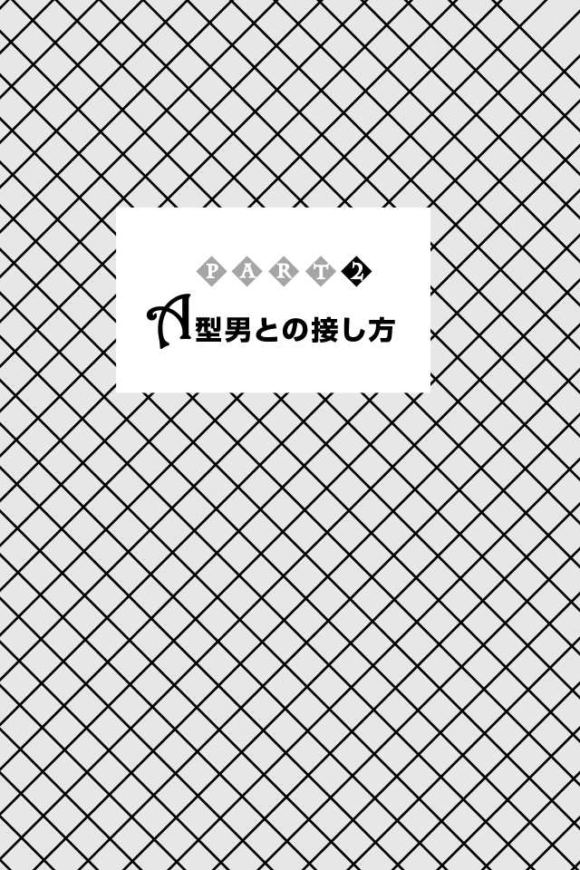

| Ａ型男の取扱説明書(あさ出版電子書籍) | |
| 神田和花 & 新田哲嗣 | |
| (2013) | |
はじめに
本書を手に取った人の多くは、「Ａ型男」の神経質で理屈っぽく、金銭面にシビアで計算高い性格にイライラした経験があるのではないでしょうか？
デートに５分遅れただけで今日の予定が狂ったと愚痴をこぼされたり、メールの返信をすぐにしなかっただけで不満を言われたり......と、Ａ型男を窮屈に感じる反面、誰にでも紳士的でやさしく、なんでもきっちりこなす真摯なあり方に誠実さを感じ、惹かれる女性も少なくないはず。
ちょっと面倒なところはあるけれど、近くにいると安心できて頼れる存在、それがＡ型男です。
実のところ、Ａ型男とうまく付き合えたとしても、必ずしも穏やかで安定した関係でいられるとは限りません。
Ａ型男は失敗をとても恐れます。そのため、付き合う前はもちろん、付き合ってから、そして結婚してからも自分が理想としている人生を歩み続け、女性に対してはそんな自分のパートナーとして見合っているかどうか、常にチェックします。
自分の考え方に合っていないと、理屈をつけては口出しをしてくるため、一緒にいると疲れてしまったり、ストレスを感じたりとＡ型男との関係に悩んでいる女性は少なくありません。
Ａ型男を愛し、信頼している彼女、妻ですらそんな状態ですから、家族、友達、同僚、上司など、周りの人はなおさら悩み、ため息することも多いでしょう。
Ａ型男とうまくやるうえで大事なのは、常にメンツを立てて意見を尊重し、女らしくすること、そして、あなたと付き合うことへの不安を取り除いてあげることです。
Ａ型男の細かなチェックや口出しは、「失敗したくない」「一緒にやっていくのに大丈夫な相手だろうか」などの不安からくるもの。つまり、その不安を抱かずに済む、安心できる存在になればいいということです。
そうすれば、用心深いＡ型男もあなたを信用し、一緒にいることが何より心地よいと気づき、攻撃的な言動も自然と減るでしょう。
とはいっても、それだけですべてうまくいくわけではありません。
本書では、Ａ型男ともっとうまく付き合っていきたい、もっと彼を男として成長させたいと考える皆さんに、Ａ型男との接し方が上手な人、つまり「Ａ型男取扱マスター」になっていただくべく、Ａ型男の取り扱い方を丹念にお教えいたします。
まずは、「Ａ型男とはどんな存在か」を知っていただきます。
共感する部分もあれば、想像もしなかったＡ型男の一面もあるはずです。
続いて「Ａ型男との接し方」についてお話しします。
即実践できるよう具体的に説明していますので、明日からのヒントにしてください。
Ａ型男についてある程度知ることができたら、次に「Ａ型男取扱マスター」になるためのレッスンを施します。
Ａ型男を扱う基本は、Ａ型男の生き方を認めてあげること。そして、そのうえでＡ型男にもっと貪欲に、快楽的に生きることをそそのかすことです。
そうすることで、ともすると真面目に堅実な人生を歩むことにばかり意識がいってしまうＡ型男が、リスクを背負っても成長し続ける生き方に目を向け、小さなことでクヨクヨすることがなくなり、心から頼れる男になります。
なお、以上のＰＡＲＴ１からＰＡＲＴ３までは、神田和花が執筆担当いたしました。
すべてを読み終えたら、巻末の「Ａ型男取扱マスター検定試験」に挑戦してください。
実生活に即した設問になっていますので、あなたの実力を確認できる一方、とっさのときに対応できる実践力をつけることができるでしょう。
この「Ａ型男取扱マスター検定試験」は新田哲嗣が作成しています。
私たちは私たちなりに、Ａ型男とＡ型男の伴侶として生きる女性をはじめ、Ａ型男を支えるすべての人に対する敬意と愛情を込めて執筆いたしました。
こっそり読んでいただいたうえで、優秀な「Ａ型男取扱マスター」となり、現場で生かしていただいても結構ですし、Ａ型男と一緒に楽しく読んでいただいても結構です。
この本をきっかけに、多くのＡ型男とその周囲の人たちが幸せになってくれることを願ってやみません。
２０１３年１月
神田和花
新田哲嗣
【目次】
Ａ型男の誠実さは天下一品
Ａ型男の最大の魅力は、なんといっても真面目で誠実であること。
恋愛においても仕事においても、それこそ結婚生活においても真摯に向き合い、取り組みます。
それがどんなに困難で、面倒くさい問題であったとしても、逃げたり、お茶を濁 したりなんてしません。
抜群の安定感でソツなく、それこそ起こりうるリスクを徹底的に排除してトラブルを解決します。
人間関係でも同じです。常に相手を思いやり、一歩、いや二歩先を読んで行動するその姿は、まさに気配り上手のお手本。
昨今、日本が「おもてなし文化」で海外から賞賛されるのも、日本人に最も多いこのＡ型男のおかげと言ってもいいでしょう。
ただし、そこにはたった一つだけ条件がつきます。それは、
Ａ型男自身にリスクが及ばない場合に限ること。
Ａ型男はリスクをとても恐れます。そのため、自分にリスクや損が及びそうになると、何よりも自分を守ることを優先します。
さらに危険察知力が人並み外れて高いので、少しでも「ヤバイ」と感じると、「昨日の敵は今日の友」ならぬ「昨日までの味方も今日は敵」とばかりに、手のひらを返したような態度をとることも。
そんなＡ型男の変貌ぶりに「なんてヤツ！」と思うかもしれません。「もう二度と信用するもんか」と腹立たしく思うかもしれません。
でもそれは、浅はかというもの。
Ａ型男のことを知らなさすぎです。
かの中国の思想家、孔子は『論語』の中で「己の欲せざるところは、人に施すなかれ」と述べています。自分がされてイヤなことは、他人も同じ。だからしてはいけないという意味です。
Ａ型男はまさしくこの言葉の実践者。自分がされてイヤなことは他人にはしません。真面目に誠実に生きることを自身に課し、迷惑をかけずに暮らそうと心がけています。
だからこそ、自身にリスクがかかることを徹底して排除しようとするのです。
このとき、Ａ型男の頭の中はこういう思考になっています。
僕（Ａ型男）が損をする
↓
周りに迷惑をかけたり、心配をかけたりしてしまう
↓
自分が安定した状態でいないと、家族や周りの人が安心できない
↓
だからこそ、自分はリスクに巻き込まれるわけにはいかない！
いろいろ思うことはあるでしょう。あまりのご都合主義ぷりにツッコミたい人も多いのでは？
実際、もともと頭の回転が速いうえに、真面目で慎重な性格であるＡ型男の保身ぶりは、巧妙かつ徹底しているため、非情で腹立たしいことこのうえなし。
でもこれは、自分の身を守ることが皆のためであると信じ、真摯に取り組んでいるからこそ。決して、周りを陥 れようとか自分さえよければそれでいいと考えているわけではありません。
どんなことにも、真面目すぎるほど真面目に取り組み、信念に誠実である。
それが人のためならなおさら一生懸命になる。
これがＡ型男の最大の魅力なのです。
Ａ型男は「番頭さん」である
私は日々、Ａ型男を観察しては、感嘆しています。なぜなら、実にクレバー な生き物だから。
常に真面目で、ソツがなく、きちんとしていて、どんな無理難題であろうが、綿密な計画を立て、失敗することなく実現することができる。
それがＡ型男です。
それはさながら、江戸時代の商家、大店の番頭さんのようです。
普段は誠実で愛想もよく、商売繁盛のため几帳面に帳簿をつけながら店を切り盛りし、少しずつ、でも確実に、お店を大きくしていく。大旦那さんよりも、お店のことを把握しているので、トラブルが起きてもすかさず対処できる、頼もしい存在です。
ただ、心のうちでは、いつか大店の娘さんと結婚し、富と権力をダブルで手にしようと逆玉の輿を狙っています。
実はここもＡ型男と同じ。
Ａ型男は、地位、権力、名誉に対する欲が、どの血液型よりも強いのです。
それこそが、Ａ型男にとって人生を生きる意味であり、目標といってもいいでしょう。自分が安定した生活を手に入れるのに、欠かせないものだと考えているからです。
ただし、お店を乗っ取ろうとはしません。
失敗したらすべてを失わなければならず、これまで積み重ねてきたものもあきらめなければなりません。そんなリスクは冒せませんし、それ以上に、トップの座に就くことが恐いからです。
トップになる、つまり店主になるということは、表舞台に出るということでもあります。何をするにも矢面に立たなければならず、ねたみ、やっかみの標的にもなる。
そんなリスクの高いことを引き受ける覚悟など、Ａ型男にはないというわけです。
だからこそ、請け負った仕事、役割を真摯にこなし、お客さまやお店の使用人とも丁寧に接して良好な関係を築き、お店の繁栄のためにせっせと働きます（お店が潰れてしまっては、それこそ元も子もありませんから）。
もちろん、そんな野心を表に出すことはしません。なので、周囲の評価はいたって上々。お客さん、大旦那、店の使用人、誰に聞いても、口をそろえてこう言います。
「あんなにできた番頭さんはいないよ。ほんと、真面目で頼りになる人だよ」
皆さん、もうすっかりＡ型男の虜 というわけです。
実にお見事。クレバーとしか言いようがありません。
そんなＡ型男には、ほかにもこんな特徴があります。
●常に一般論で会話をする
●本音と建前を使い分けるのがうまい
●チャレンジする前に、まずは失敗したときのことを想定して備える
●周りをコントロールしようとする支配欲や征服欲が強い
●常によく気が回る
●目上の人を立てることがうまい。序列を大事にする
●上司の朝令暮改に振り回される
●どんな場でもソツなく、うまく対応できる
●価値観が合わない相手の話であっても、納得できる理由があると、潔く認める
●手取り足取り教えてあげることが大好き
●周りから好評価を得られるよう仕向けるのがうまい
●敵に回すと怖い（徹底的にやられる）
●自分に非があっても、正当性を主張するような言い訳が得意
●優先順位をつけるのが苦手
●常識があり、品がある女性を恋人、妻にしたいと考えている。
●女性にやさしく、基本的に恥をかかせることはしない
●小さなわがままは言っても無茶は言わない、甘え上手な女性が好き
●価値観を否定せず、メンツを立ててくれる女性を求める
●意外とアバンチュール好き
●悪女タイプの女性を従わせたいという欲求がある（逆に痛い目を見ることが多い）
●計画的に物事が進むと自己満足に浸る
●人を傷つけて喜ぶことはしない
●人にさりげなくやさしくすることが苦手
●貯金や投資に興味があり、堅実に取り組んでいる
●富も権力も好きだが、表舞台で生きる覚悟は希薄である
●時代の流行によって、主義、主張、考えを変える柔軟さがある
●組織などでは協調性が高い
いかがですか？
真面目なだけが取り柄でオモシロみがない人だと思っていたのではないでしょうか？
勤勉で真面目な顔の裏には、人並み以上の欲を持ち、大きなやさしさと女性への深い愛情を兼ね備えた魅力の持ち主、それがＡ型男なのです。
まさに、あなたの人生においての便利で頼れる「番頭さん」なのです。
Ａ型男はオヤジギャグ好き
Ａ型男はオヤジギャグが大好き。
お酒を飲んだときや場を盛り上げようとするときに、結構な頻 度 で連呼しています。
会話に挟み込んでくるオリジナルギャグはもちろん、
「布団が吹っ飛んだ」
「Ａ４がねえよ（Ａ４）」（某会社のＣＭ）
などのような定番ものから、
「余裕のよっちゃん（イカ）」（某お菓子のＣＭ）
「当たり前だ（田）のクラッカー」（某お菓子のＣＭ）
などのような、「いったい誰が知ってるんだ、そんなの」といった、超古典的なものまで幅広く抑え、それを得意気に披露します。
これで盛り上がればいいのですが、場が凍えるような寒さに襲われることもしばしば。
「いくら計算高く、ソツのない対応が得意だとしても、やっぱりＡ型男はオモシロくないってことね」
と思うかもしれませんが、それは大間違い。
一見いただけないオヤジギャグ好きキャラは、Ａ型男のしたたかな計算によるもの。
「ギャップ効果」をねらっているのです。
「Ａ型男」というと、それだけで生真面目で神経質だと思われてしまったり、ソツのない振る舞いから固い印象を与えてしまい、とっつきにくい人だと思われがち。それを払しょくするのに多くのＡ型男は苦心しています。
そのなかで彼らが見つけたのが〝オヤジギャグ〟というわけです。
「えっ？ 真面目でなんでもできて、とっつきにくい人かと思ってたけど、なに？ まさかのオヤジギャグ好きキャラ？ Ａ型男さん、ウケるんだけど～♪」
などと親しみやすさを感じてくれたら、大成功。
いつもは真面目できちんとした人が、楽しそうにオヤジギャグを言ってきたら、一瞬驚いて言葉を失ったとしても、ツッコミますよね。
さらに、オヤジギャグで相手を和ませている姿を見かけたら、好感を持つのではないでしょうか。
まさにＡ型男の思うツボというわけです。
でも、ここに悪意はまったくありません。
ただ、皆と仲良くなりたいだけ。
そして、もう一つ。
驚くことにＡ型男自身もオヤジギャグが大好きなのです（生真面目で頭がカタイため、ギャグのセンスが古い）。
なので、Ａ型男がオヤジギャグを言ったら、しっかり反応してあげましょう。
Ａ型男は、あなたの反応に大喜びすることでしょう。
Ａ型男の処世術はピカイチ
Ａ型男さんが、取引先の社長に接待され、高級クラブに行くことになりました。
取引先の社長「さぁ、Ａ型男くん、今日は両社の契約継続をお祝いしてパーッと飲もうじゃないか」
Ａ型男「（ボク、お酒がまったく飲めないんだよな。ああ、飲みたくないな......。でも、仕事だ。仕方がない）はい、いただきます。グビグビグビグビ（お酒を飲む音）......」
取引先の社長「おお、いい飲みっぷりだね」
Ａ型男「ありがとうございます！ 今日はほんと、お酒がおいしいです。（満面の笑みで）グビグビグビグビ......」
取引先の社長「いいねー。気に入ったよ、Ａ男君」
相手との関係を深めるためであれば、自分の意に反して無理をすることも厭 わないのがＡ型男。
一歩も二歩も先を読んで相手の喜ぶことをしてあげられるという天性を生かして、常に相手に合わせる。これがＡ型男のコミュニケーション手法です。
Ａ型男が常に願いモットーにしている、波風立てることなく穏やかに生きていく秘訣といってもいいでしょう。
家族や同僚から罵 倒 され陰口を言われても、下品な成金のお客様からクレームを言われても、上司の朝令暮改に振り回されても、その姿勢は変わりません。
会社のため、仕事のため、自分のためならば、たとえ信念、こだわりを曲げてでも、相手が気持ちよくいられるよう、うまく、ソツなく、そして真摯に向き合います。
そこまでされて、嬉しくない人などいません。Ａ型男の普段の真面目な姿を知っていたら、なおさらでしょう。
結果、強力な求心力がなくとも、安定した好感度の積み重ねで、がっちり相手の信頼を勝ち取ることができるというわけです。
さらに、こうしてつくられた信頼関係は簡単には崩れません。数年後、数十年後まで保たれることだってあります。
「Ａ型男さんには昔からお世話になっていてね～」
という言葉に支えられて出世していく人も実際います。
一見、常に様々な人に振り回されているだけのようですが、言い換えると、誰に対しても同じ姿勢で臨むだけなので、変な手間をかけずに済むため、とても効率的。
Ａ型男はコミュニケーションが上手なだけでなく、とても強力でピカイチの処世術の持ち主でもあるのです。
Ａ型男は「キチンと」が当たり前
Ａ型男は、何事においてもきちんとしています。
きちんとしようとは思っていなくても、自然ときっちりしてしまうといったほうがいいかもしれません。
Ａ型男の朝は、目覚まし時計で正確に起きるところから始まります。
ときには目覚まし時計が鳴る前に目を覚ましたら、そのまま鳴るのを待ちます。
「鳴るのを待たずに起きればいいじゃない」というのは無粋。
これは、Ａ型男のやさしさだからです。
「目覚まし時計を使わない（鳴らさない）のはかわいそう」
とってもやさしいＡ型男は相手が機械であっても、やさしさを発揮してしまうのです（そのことを彼女、妻に毎朝自慢するので、なかなか面倒くさいのですが......）。
さて、目覚まし時計が鳴り出すとともにＡ型男が起き上がった瞬間、自動的にテレビがつきます。毎朝起きる時間に、自動的に電源が入るよう設定しているのです。
出かける準備をしながら、目立ったニュースがないかをチェックしたら、最後に天気予報を確認します。
降水確率が二十％以上だとわかれば、折りたたみ傘を持っていきます。もちろん、Ａ型男の鞄には常に折りたたみ傘が入っているのですが、その確認は欠かしません。
降水確率が五十％以上だとわかれば、大きな傘を準備。さらに、いつも履いているお気に入りの靴ではなく、古い靴に防水スプレーをかけ、防水加工してあるスーツを選びます。
雨でないときは、その日に会う人に合わせて、スーツ、ネクタイを選びます。
朝食にはパンと目玉焼き、コーヒーが定番メニュー。出かける前に、電気の消し忘れがないかをきちんと確認し、食器を台所のシンクに下げて、テレビやエアコンのリモコンをテーブルの上にいつもと同じ順番で並べ、忘れ物がないか見渡し、靴ベラでかかとがつぶれないようにしっかりと靴を履き、いつもと同じ時間に家を出ます。
いつもの道を通って、いつもと同じ時間の電車のいつもと同じ車両に乗り、いつものようにちょっと早めに会社に着きます。
よほどのことがない限り、変更はありません。
Ａ型男にとって行動のパターン化こそ、失敗しない法則だからです。
では、他の血液型男の朝を見てみましょう。
Ｂ型男は、日によって起きる時間がバラバラ。朝から元気で、時間があろうがなかろうが、「ノリとツッコミ」を忘れず家族やテレビに絡みます。余計なことをしているうちに時間が迫り、慌てて朝食のパンをくわえて駅までダッシュ。そんなときでも、曲がり角で女性とばったり激突。そんな胸キュンな出会いを妄想して朝からハイテンションです。
Ｏ型男は、いつも時間ギリギリに起床。二度寝もしょっちゅうしでかします。
十分な時間がないのに、口笛を吹きながらマイペースで準備。このとき、時計を見ていないこともしばしば。「ま、なんとかなるだろう」と楽観的に考えているのです。
その余裕ぶりに、見ているほうがイラっとします。
ＡＢ型男は家を出る二時間前に起き、余裕を持って、完璧な支度をします。そうすることで「ヘマ」を事前に防ぐのです。実際、身なりも身支度も完璧ですが、出てきた部屋はぐちゃぐちゃに散らかっています。そして、出勤するいつもの道で野良ネコとどっちが目をそらさないで耐えられるか を勝負し、塀の上のネコを負かして退散させることを日課としています。
いかがでしょうか？
ほかの血液型と比べれば、いかにＡ型男が頼もしいかわかるでしょう。
Ａ型男は惚れた女性のかゆいところに手が届く、一流のおもてなし男ですから、一緒にいるととっても重宝しますよ
やさしさにも几帳面さを忘れない
ある日、あなたが仕事で失敗してしまい、階段脇の人目につかない陰で泣いていると、Ａ型男が通りかかりました。
あなたが泣いていることに気づいたＡ型男は、スーツの胸ポケットからさっとハンカチを取り出し、無言で差し出しました。きちんとたたまれたそれは、アイロンもしっかりかかっていて、上質で品のよさを感じさせます。好意に甘えて渡されたハンカチで涙を拭いていると、今度は鼻水が......。
すると、すぐにティッシュが差し出されました。
あまりの素早さに、驚き、躊 躇 しているあなたに、Ａ型男がひと言。
「つらいことあるよね、仕事も人生も......。俺もよくある。あ、ティッシュなら遠慮せずどうぞ。たいした物じゃないからさ」
なんてことでしょう。
ハンカチを貸してくれただけでなく、あなたがティッシュを心おきなく使えるよう、さりげなくフォローまで入れてくれるではありませんか！
それだけではありません。
ティッシュのゴミが出るたびに、あなたの目の前にゴミ箱を用意してくれるのですから、もはや至れり尽くせり。言葉がありません。
なぜここまでできるのか？
それは、Ａ型男がやさしく、番頭だけあって人の役に立つのが好きだから。
そして、几帳面で計画どおりに物事を進めるのが好きだからです。
想定どおり物事が進むと、「やっぱり僕は完璧だな！」と自己満足して自信をつけ、次の機会に備えます。
Ａ型男はハンカチやティッシュを用意する際、自然と誰かに使ってもらうことを想像しています。
「もし、女性が泣いているのを見つけたら、ハンカチとティッシュを出せるようにしておこう。出し入れしやすいよう胸ポケットにハンカチを入れて、ティッシュは、鼻水が出たときだから......、そうだ、ズボンのポケットにしまっておけばいいかな」
このようにＡ型男のやさしさには、おもてなし精神にのっとった気配りと生来のこまごま気が利く几帳面さも相まっているため、とても気持ちよくいられます。
そのやさしさに触れたときは、にっこり笑って、
「ありがとう、Ａ型男さんって本当にやさしいのね」
「なんでそんなに完璧な立ち振る舞いができるのかしら。私もいつかＡ型男さんみたいに気配りができる女性を目指したいわ」
とＡ型男のスキルを褒めてあげましょう。
それだけでＡ型男はあなたの役に立ったと、充実した気分になれるでしょうから。
Ａ型男は失敗しない
Ａ型男は、極端に失敗することを嫌います。
何をするにも徹底的に準備、検討をしてから取り組むため、まず大きな失敗はしません。
その徹底ぶりたるや、Ａ型男をちょっと観察してみるだけでもすぐにわかります。
精度の高い観察力や分析力で対象（モノ、人）を事前研究し、お得意の相手の側に立ったコミュニケーション力で情報を収集します。
そして、少しでも自分にリスクがありそうだと察知すると撤収を決めます。
クールな頭脳と、空気を読める心情的理解力に優れているからこそ、できる技。
その姿には、尊敬の念を感じる人もいるでしょう。
この徹底した事前調査＆準備は、恋愛面においても同じです。
Ａ型男は、一時的な恋愛感情に惑わされることはありません。
なぜなら感覚的なことだけで女性を選ぶのは、危ないと知っているから。
自分にとってどんな女性が必要か、あらかじめ考え、そのなかで見つけた理想像を基に判断します。
たとえば、どんな美女だろうが、料理も掃除も洗濯もできない女性は対象外。
もちろん男ですから、美女には惹かれます。
鼻の下を伸ばしながら、Ａ型男が美女に「何もできなくてもいいよ。いてくれるだけで幸せだよ」と言っている姿を目にしたことがある人もいるかもしれません。
でもそれはウソ。
あくまで、その場限りの戯 言 です。
Ａ型男は人生を共に生きるパートナーには、家庭でも職場でもきちんとできる、品のある常識的な女性を求めます。たとえクレオパトラのような絶世の美女だったとしても、常識的な部分で不安を感じれば、Ａ型男にとって価値のない女性なのです。
あなたがＡ型男と対立せず、「彼ならすべてうまくやってくれるだろう」と信頼する姿勢さえ崩さなければ、Ａ型男は必ずあなたの存在に気づき、目をやるようになるはずです。
「この女性と一緒にいると物事がスムーズだな、価値観が似ているのかな」とＡ型男が思い始めたら、シメたもの。
二人の距離は、一気に縮まっていくでしょう。
理想のタイプはお金にシビアな女性
「５００円のホワイトデー」
「５０００円の誕生日祝い」
「５０００円のクリスマスプレゼント」
「１０００円のサプライズの花束」
これは、とあるＡ型男が彼女のプレゼントのためにかけた年間金額の概要です。
あらためて言うまでもないですが、
Ａ型男はお金より愛情が大切だと考えています。
そして愛情以上に、気持ちを品物にして伝えるほうが、女性にはより効果的であることも知っています。
だからこそ、恋愛にお金を使うことに対してとてもシビアです。先ほどの慎 ましいデート予算はそのためです。
なぜここまでシビアなのか。
それは、失敗したくないから。
そして、幸せになりたいからです。
Ａ型男は、他人に迷惑をかけることを恐れていると、前にお話ししました。
なかでも、お金に関するトラブルをとても恐れています。金銭トラブルに陥ってしまうと、家族、友人にまで迷惑をかけかねないことを知っているからです。
金銭感覚に厳しい女性であれば、共通の価値観が持てるうえに、将来、金銭トラブルに巻き込まれる心配はほとんどないと考えます。
そこで、気になる女性と出逢ったら、まず、彼女の金銭感覚を確認しようとします。
そしてデートでの女性の対応を観察し、自分と見合う女性か、パートナーとして一緒にやっていける相手なのかを見極めるのです。
Ａ型男がいくら資産を持っていようが、この不安は変わりません。むしろ、お金目当ての女性かもしれないと疑いの念を強くする可能性もあるでしょう。
あなたがＡ型男に気に入られるには、彼のしたたかさを見抜き、受け入れることが肝心です。
ケチなのか、倹約家なのか、それともあなたを試しているだけなのか――。
少なくともデートにかける金額＝彼の財産レベルではないことをまず頭に入れ、彼から与えられた試練で、あなたも彼を見極めることです。
そのうえで、彼とやっていきたいと考えるのであれば、きちんと家計の収支を立てる覚悟があることを伝えましょう。
あなたを信頼できると思ったら、自然とデートのあり方も変わってくるはずです。
Ａ型男よりも財布のヒモが固くしっかりした女性を、Ａ型男は求めているのです。
実はアバンチュール好き
Ａ型男は、真面目で真摯でリスクを避けて生きています。
それが、Ａ型男にとって幸せだからです。
ところがその一方で、ちょっとしたアバンチュール（一晩限りなど短期間の恋）が自分に訪れることを夢見ています。
「気持ちわる～い」
なんて言わないであげてください。
真面目で誠実に生きている分、ちょっとタガを外してみたいと願うのが人間というものです。
真面目な優等生が、ちょっとワルでモテる男に憧れるのと一緒。
ですから、愛人をつくって二重生活をするなどといった非現実的な企みはいたしません。
実際、Ａ型男が密かにたくらんでいる愛人計画 は、想像以上にケチくさい。
「本妻が愛人っぽかったら一石二鳥で安上がりになるのになあ～」などと、本気で考えています。
本当に夢見ているだけということが、よくわかりますよね。
その証拠に、Ａ型男は、若村麻由美や米倉涼子、壇蜜を観るたびに、
「こういうタイプの女って本当はどんな感じなんだろう？ 見たまんまなのかな？ やっぱ、すべて演技か？ それも怖いな......。いやいや、でも......」
と想像し、ため息をつきながら妄想を繰り広げては、いつも同じ結論に到達します。
「やっぱり金だよな～。本妻も愛人もどっちも欲しいんだけど。運よく手に入れることができたとしても俺に稼ぎがないとダメかあ......」
そうは言いながらも、三日に一度は、危険な恋が訪れるのではないかと夢見ずにいられないＡ型男。
Ａ型男が今日も明日も勤勉に働き続けることができるのは、こういう不純な動機に支えられているところもあるのです。
＊＊＊
さて、Ａ型男の性質はいかがでしたか？
誠実で人当たりもよく、聖人君子に見えるその裏で多様な顔を持っているのです。
まさに、密かな変身願望があるワイルドな男、それがＡ型男の本当の姿です。まずは、そのことを受け入れましょう。
続くＰＡＲＴ２では、より具体的にＡ型男との接し方についてお話ししていきます。

Ａ型男の誠実さは天下一品
何事もソツなくできるＡ型男は、子どもの頃から本音と建前を使い分け、要領よく生きてきました。
もともと頭の回転もいいので、さほど努力しなくても難しいことも、さらりとこなします。お世辞抜きで優秀です。
そんなＡ型男がちょっと頑張れば、いわゆるデキる男になることができます。
ところが、失敗することを恐れすぎるがために、最初の一歩を踏み出すことがなかなかできません。気になる女性に声をかけることすら、なんだかんだと理由をつけては動こうとしません。ほかの誰かがその女性を誘って断られたなんて話を聞いたら、「ほらね、声かけなくて正解だった」と考え、二度と動くことはないでしょう。
本当はもっとデキるはずなのに、そして、心の奥底では「成功したい」という野心があるくせに、無難な人生を選んでしまっているＡ型男が、とても多いのです。
こんなＡ型男を積極的に行動させるポイントは、あなたがとことん持ち上げること。
「あなたはほかの男とは違って優秀だから、絶対大丈夫よ」
などと、ストレートな表現で、Ａ型男の優秀さを知っているし、信じていると伝え、彼の心をくすぐるのです。
本音をめったに出すことのないＡ型男だけに「俺なんてまだまだだよ......」と成功に微 塵 の興味もないかのように装うでしょうが、本心では、「イケるかも」と思い始めます。
この心のくすぐりを何度か繰り返すことによって、Ａ型男は勇気と力を得て、一歩踏み出します。
恋愛であっても、仕事であっても、同じです。
大事なのは、「Ａ型男は特別」だと、「周りと違って優秀」だと感じさせること。
ただし、「周りができているんだからあなたも......」という伝え方はＮＧ。
Ａ型男のプライドを傷つけ、ヤル気をそいでしまうばかりか、状況によっては、あなたを拒絶するようになるかもしれません。
すべきことは、Ａ型男を持ち上げる、ただそれだけです。
大成功した「偉人・賢人」の話を引き合いに出すのもいいでしょう。
「まるでＡ型男さんみたいな人ね」
とひと言添えるだけで、Ａ型男はその「偉人・賢人」に近づいた気分になり、前向きにチャレンジするようになるでしょう。
心が疲れているときは過度な刺激を与える
あなたがＡ型男と接するうえで、忘れてはいけないことがあります。
それは、Ａ型男は真面目すぎるがゆえにストレスを溜めやすいこと。
Ａ型男には鬱 になる（または、鬱の傾向になる）率が高いといわれるように、ストレスによって心が疲れやすいという、あまりうれしくない特徴があります。
なかなか弱音を吐かないＡ型男だからこそ、限界を超えてしまわないように気をつけてあげることが必要です。
「もう出勤したくない......。もう限界......」
などと力なくつぶやき始めたら、危険信号。
こんなときは、Ａ型男の心臓が止まらないくらいの、適度な刺激を与えるとよく効きます。
たとえば、休日のちょっと遅めの昼食に激辛カレーを用意する（お腹が弱い人はカレースープでＯＫ）。
ぼーっとしながらＡ型男がひと口食べれば、あまりの辛さに頭まで刺激がいき、すぐに目が覚めるでしょう。そして、
「仕事も大変だけど、自宅でもうかうか寛 げないのか......（泣）。どこにいても気が休まらないなら、会社のほうが給料も入るし、まだマシかも」
と正気に戻るはずです。
ちょっと乱暴ですが、鬱々とした気分を吹き飛ばすには効果大。刺激に気を取られ、心の中のモヤモヤから意識をズラしてあげることができます。
ただし、Ａ型男が弱っているときに、あなたが叱咤激励したり、根性論で諭したりすると、絶望して家出したくなってしまいます。
十分、気をつけてくださいね。
やさしさに心から感謝する
何度も繰り返しますが、Ａ型男はとってもやさしい生き物です。
たとえば、あなたと一緒に何かをすることになったとします。
するとＡ型男は、これでもかというほどあなたの立場、状況、気持ちを考えてから、物事を決めたり、提案したりします。
あなたからの返答や意見についても、心からの言葉なのか、社交辞令なのかを表情から読み取ります。
読み取れなかったときは、直接あなたにどんな気持ちからの言葉なのかを確認し、調整したり、反省したりします。
クールな対応すぎて、一見事務的に見えるかもしれませんが、その言動一つひとつに、Ａ型男のやさしさと思いが詰まっているのです。
Ａ型男がこんなにも相手の気持ちに配慮した行動をするのには理由があります。
それは人から、特に女性からよく見られたいから。普段はしっかり隠していますが、その欲がほかのどの血液型よりも強いのです。
女性が喜んでいることがわかると、それが新たなやる気になり、パワーになります。
なので、わかりやすい方法で、Ａ型男の言動に、その裏にあるやさしさに感謝の気持ちを伝えましょう。
ただし一回や二回、「Ａ型男さんってやさしいわね！」などと簡単な言葉で褒めたところで、彼の心には何も響きません。
あなたがＡ型男の目に見える形で、「いつも ありがとう」「あなたって本当にステキね」という思いを常に伝え続けることがなにより必要です。
さらに、Ａ型男に感謝の気持ちを伝えるときは、感謝の言葉とともに、スキンシップをはかると効果的です。
感謝を伝えようとしてくれるあなたを見て、そして言葉を受けて、Ａ型男はもっとあなたのためにできることはないかと考え、また動き続けます。
それがときに見当外れになってしまうこともあるかもしれませんが、それはご愛嬌。すべてはＡ型男が、あなたを心から大切にするがゆえだからです。
ちょっと違うなと思ったら、
「○○を× × してくれてありがとう。とても助かっているわ」
と具体的に伝えてあげましょう。
そうすることで、頭のいいＡ型男には、あなたが何を求めているのかが理解でき、それを基に軌道修正を図るでしょう。
軌道修正がうまくいったときには、もちろん感謝の意を伝えてあげてくださいね。
お財布は必ずチラ見せする
Ａ型男とのデートは、気を抜けません。
用心深いＡ型男は、常に「（目の前にいる）この女性は、自分のパートナーとして見合っているか」をチェックしているからです。
金銭感覚については、それこそシビアに見ています。つまりそれだけＡ型男にとって、金銭感覚は重要だということ。
デート中の会話がどんなに弾もうと、ここで不合格となり、次のデートにコマを進めることのできない女性は少なくありません。
ではいったいどうしたら、この試験に合格できるのでしょうか。
それは、Ａ型男にお金を出させること。
「ナニソレ？ お金を出させるなんて、それこそ不合格まっしぐらでしょ」
「金銭感覚がしっかりしている人なら、自分の分はちゃんと払うでしょ？」
などと、ツッコミの声が聞こえてきそうですが、そんなに単純ではないのがＡ型男。
自分のものは自分で買うのは当たり前だけど、お茶代やちょっとした食事代は出してもらう（つまり倹約する）。
そんな、したたかさをあわせ持っている女性こそ、金銭感覚がしっかりしていて、自分に見合っているとみなすのです。
さらに、Ａ型男は女性に振り回されたい願望が強いので、言うほど対等な関係を望んでいるわけではありません。
常にきちんとワリカンにする女性は、可愛げや女性らしさを感じないため、かえって不合格。もちろん、なんでもかんでもたかろうとする人は論外です。
あなたがとるべき対応は、適度に、Ａ型男にお金を出してもらうこと。
たとえばこんな感じです。
あなたとＡ型男がカフェでお茶をしたとします。
ケーキもおいしく、会話も弾み、楽しく気持ちのよい時間を過ごしていると、そろそろ出なければいけない時間に。
Ａ型男「そろそろ行こうか」
あなた「そうだね。おいしかった♪」
あなたは立ち上がりながら自分のバッグの中に手を入れ、こう尋ねます。
あなた「いくら？」
Ａ型男「ああ、いいよ、ここは」
そう言われても、まだひっこめてはいけません。お財布をバッグからちょっと引っ張り出して、Ａ型男に見えるようにして、こう言いましょう。
あなた「でも......」
するとＡ型男はすかさずお財布をチラ見し、満足そうにこういうはずです。
Ａ型男「いいよ、いいよ」
あなた「ありがとう♥（にっこり）」
これですべてＯＫ。Ａ型男は、財布を出そうとした＝お金を払おうとしたと判断します。さらに、あなたの微笑みにＡ型男は魅了され、一発合格となるでしょう。
ただし、Ａ型男が「じゃあ、一〇〇〇円ね」などと言うときは、残念ながら金銭感覚以外で不合格になったということ。あきらめて次に行くのが賢明です。
Ａ型男に誘われたときの断り方
Ａ型男は几帳面で計画的な男。
あなたをデートに誘うときは、最低五回はシミュレーションし、そのうえで、
「先約があったり、都合が悪かったりしたら気にしないで断ってもいいよ」
とあなたのことを気遣った誘い方をしてくれるでしょう。さすが、気遣いのお手本です。
こんなふうに聞いてもらえるなら、デートを断るなんて簡単じゃないか、と思うかもしれませんが、そこはＡ型男。
実は、一歩も二歩も先を読むことができるだけに、誘いを断られたときにもう一つセリフを用意して来ています。
なんと、一カ月後のあなたの予定を聞いてくるのです。
たとえば、こんな感じです。
「今度一緒に映画でも観にいかない？ 来月の土曜日に人気映画が封切りされるんだ。でも、土曜日だし、予定があったら断ってくれてかまわないよ！」
そんな先の予定を聞かれたら、どんな女性だってうまく断るのは至難の業でしょう。
あからさまなウソは繊細なＡ型男を傷つけてしまいかねません。
Ａ型男を傷つけずに断るには「はっきりさせないこと」。
そんなＡ型男の誘いを断れるオススメの方法は次の三つです。参考にしてください。
①こちらから連絡すると伝える
「ごめんなさい。今はそんなに先のことを考えられない。でも、来月になってその映画が観たくなったら私から連絡させていただきます。それでよろしいですか？」
②決められないと伝える
「ごめんなさい。まだ来月までの予定がわからないから、よかったら二週間後、もう一度誘ってくれませんか？」
③家族の病気を理由にする
「ごめんなさい。祖母の具合が悪くて週末は私が看病しているから難しそう」
イエス、ノーをはっきりさせずに結論を棚上げする。お互いが傷つかないための知恵として、あなたがＡ型男と接する際の習慣にしておくとよいでしょう。
Ａ型男を振り向かせるには
計算高いＡ型男を落とすには、女子力をアピールしても通用しません。
社交辞令の延長だとＡ型男は冷静に考えるでしょう。
効果的な作戦の一つが、あなたの行動のパターン化です。
Ａ型男は規則、慣習といったパターン化が大好き。
自分の行動も、できる限りパターン化しています。
反対に、パターンどおりにならない、コントロール不能な人、物事が大の苦手です。
つまり、あなたの行動をパターン化することで、苦手ではない存在に、そして、できれば得意な存在、好ましい存在になり、Ａ型男との距離を縮めようという考えです。
毎日決まった時間に、Ａ型男へメールを送ってみるのも一つ。
たとえば毎朝十時に、あなたが今やっていることとか、その日の予定とか、ささいなことをメールで伝えるというルールを決め、実行したとします。
もちろん、Ａ型男と約束するわけではありませんし、そのルール自体も伝えません。
それでも一週間もすると、Ａ型男は毎朝十時になると「今日はどんなメールかな？」と楽しみにするようになります。三分でもメールが遅れようものなら（遅れているのに気づいたら）、「何かあったんじゃないか」と心配でイライラ。あなたからのメールが届くまで落ち着かない時間を過ごします。
Ａ型男は計画的に物事を考える性質があるため、毎朝十時のあなたからのメールをも、早々に予定に組み込みます。
つまり、メールを送っても、メールを送らなくても、一日少なくとも一回はあなたのことを考えるようになるというわけです。
さらに、もう一つ、このパターン化には大きな効果があります。
Ａ型男は征服欲、支配欲が強いため、身近な人（家族、恋人、部下）の行動は把握しておきたいと考えます。
あなたが毎朝メールを送ることで少しでもあなたのことを把握できるようになると、もっとしっかり知りたいという気持ち、欲が強くなってきます。
そしてそのうち、「あなたのことをきちんと毎日把握する」という予定がＡ型男に組み込まれることになります。
そうなればもはや「恋愛状態」と変わりません。あとは一押しするだけです。
ただし、パターン化が長期にわたったり、お互いの決まりごと（約束事）としてしまうと、計画的なＡ型男の性格が災いし、メールが遅れたり、出せなかったりするだけで、「約束を破った」と認識され、怒りや不満のタネになってしまうことがあります。
パターンを崩すことになってしまうときは、連絡を入れることをお忘れなく。
Ａ型男との上手な別れ方
別れ話を切り出す際は、視線、言葉の端々まで、注意を払いましょう。
やさしいからわかってくれるだろう、というのは大間違い。
Ａ型男は、全血液型のなかで最も執着心が強くストーカーになりやすい傾向があり、
ちょっとヘマしただけで、後々面倒なことになりかねません。
「別れてほしいの」
と、ストレートな表現で女性から別れを切り出されたとしても、Ａ型男は、悪い冗談だと考えます。
神経質すぎるくらいあなたを大切に思ってきたし、大事にしているという自信もあるため、なぜあなたが別れたいのか、その原因が思い当たらないのです（その神経質で細かすぎる性格がアダとなり、ケンカや別れの原因になるのですが......）。
そんなＡ型男に、正直に別れの理由をぶつけてもモメるだけ。
ハッキリ言って、時間のムダです。
Ａ型男と別れたいときは、どんなに思うことがあっても、心に溜まった怒りや文句があったとしても、たったひと言、伝えるだけにとどめましょう。
「優秀で何でもソツなくこなせるＡ型男さんにはこんな私なんて不釣り合いなのよ、ごめんなさい」
あくまでＡ型男を否定せず、ただ私（あなた）が悪いの。だから、身を引かざるをえない、とだけ伝えるのです。
上手に別れるコツは、Ａ型男の自尊心（プライド）を傷つけることなく、あなた自身に二人の将来を考えることができない原因があるとすること。
するとＡ型男は「そこまで自分のことを考えてくれていたのか」と感激しながらも、「たしかにそうかもな」と考え、あなたの言葉を、そして別れを受け入れるでしょう。
ポイントは、あなたに振られたのではないという事実が、Ａ型男の中にできること。
それ以外のアプローチは、不毛な争いに時間を費やすことになるか、ストーカー化したＡ型男に付きまとわれる不穏な日を過ごすことになるのがオチです。
別れてしまいさえすれば、あなたの心の中の澱 もスッキリします。
なので、ここだけは最後のガマンと思って、任務を遂行してしまいましょう。
ただし、別れが決まったら、二度と優しい言葉をかけたり、困ったことを相談したりなど、こちらからはいっさいアプローチをしてはいけません。
あなたにそんな気がなくても、「まだ俺のことが忘れられないんだな」と勘違いして、しつこいアプローチに悩まされることになります。
Ａ型男から連絡がきたとしても無視するようにしましょう。
＊＊＊
さて、Ａ型男との接し方、いかがでしたか？
これまでいったいどうすればいいの？ と迷ったり失敗したりしたシチュエーションもあったのではないでしょうか？ ぜひ今後はどんどんご活用くださいね。
続くＰＡＲＴ３では、Ａ型男とうまく付き合えるようになる方法（「Ａ型男取扱マスター」になるレッスン）についてお話ししていきます。
立派なＡ型男取扱マスターになるには
ＰＡＲＴ１で「Ａ型男は番頭さんである」とお話ししました。
では、この番頭Ａ型男を上手に取り扱うには、つまり、立派なＡ型男取扱マスターになるにはどうしたらいいでしょうか？
Ａ型男とうまく付き合うには、あなたがＡ型男にとって「自分の可能性を信じ、広げてくれる女性」であると認識してもらうこと。言い換えると、煽 てたり、ハッパをかけたり、甘えたり、ねだったり、誘惑したり、ときには堕落させたりすることで、Ａ型男の野心に火をつけ、上昇志向を持たせ続けることができる女性となることです。
Ａ型男は縦社会を重んじるため、ふと気が緩むと「古い常識」に縛られたまま、資本家や権力者たちに仕え、現状維持を目的に生きようとします。
心の奥にある野心や頭の回転のよさ、優秀な観察力や分析力などをすべて隠し、建前だけでやり抜こうとするその姿は、さながら「能ある鷹は爪 を隠す」の鷹のよう。
このまま一生爪を隠したまま生きていくのでは、地味でオモシロみのない人生になってしまいかねません。
Ａ型男に引っ込めている爪を出させ、本心、感情に素直になり、幸せな人生を歩んでもらうことが、Ａ型男取扱マスターの役割です。
ふだんは本音を隠し、胸の内にある野心に本人が目をつむって見ないようにしているため、近くにいても気づきにくいですが、Ａ型男ほど欲深く、野心家であり、それに見合った資質を持っている男性はいません。
あなたが何もしなければ、いつまでも爪を出すことはなく（いつしか出したくても出せない状態になる）、職場でも家庭でも陽の目を見ることはないでしょう。そして、一緒にいるあなた自身も、現状維持志向の退屈なＡ型男との日々に、ただストレスを溜めるだけの人生になることでしょう。
つまり、あなたがＡ型男取扱マスターになれなければ、ともに浮かばれない人生を歩むことになりかねないのです。
そうならないためにも、Ａ型男とうまく付き合う方法を習得しましょう。
真面目で誠実なだけのＡ型男にただ寄り添って生きる立場から、Ａ型男の野心に火をつけ、クールな顔とは裏腹に「オレは欲しいものをすべて手に入れるって決めたんだ！」と闘志を燃やさせ成功させる存在、つまり「Ａ型男取扱マスター」にあなた自身が成長していくことが求められているのです。
Ａ型男に密かな闘志を持ってもらうために、どんなプロセスでアプローチしていくと効果的なのか――。その具体的な方法を「Ａ型男取扱マスター」になるためのレッスンとして、ＰＡＲＴ３では紹介していきます。
Ｌｅｓｓｏｎ01 魔性の女になる
Ａ型男取扱マスターになるには、Ａ型男にとって、なぜか惹きつけられる女性になることが必要です。
Ａ型男は、女性を心底恐れているうえ、常に疑い、警戒しています。
正しく言うと、女性そのものというより、女性に騙され、破滅していくことを恐れています。
それでいて、女性が持つ「魔性」の部分に最も惹かれているのもまた事実です。
Ａ型男は自分を手玉にとる「魔性の女」にひっかかり、死ぬまで美しく騙され続けたいと心底願っています。
それがＡ型男がひた隠しにしている夢であり、本望です。惹かれてしまうからこそ、「魔性」の部分を敏感に感じ、警戒せざるを得ないというわけです（気を緩めると、一気に落ちてしまうことを知っているのでしょう）。
Ａ型男と一緒にいるには、あなたのことを一緒にいたい女性、もしくはパートナーとしてふさわしい女性だと思ってもらわなければなりません。
元来、Ａ型男は理性で冷静にパートナーを選ぼうとします。ただし、その細かな条件をクリアするのはそう簡単ではありません。
つまり、魔性の女になってしまうほうが、話が早いというわけです。
魔性の女とは、何も性根まで悪女になれと言うことではありません。
Ａ型男と接するときに、ちょいと演じればＯＫです。
話すときはいつもより余計に近くに寄ってみたり、ボディタッチをしてみたり、言葉の端々にＡ型男に好意があるかのようなニュアンスを入れてみたり......。
女性らしさを積極的にアピールするよう心がけておけば、Ａ型男にとって魔性の女となり、存在感を発揮できます。
Ａ型男にとっての魔性の女を演じましょう。
Ｌｅｓｓｏｎ02 手のひらで転がす
Ａ型男取扱マスターになるべく、悪女になったら、あとはＡ型男を翻 弄 していきましょう。
最も有効な方法が、「アメとムチ」の手法です。Ａ型男を褒めたり貶 したりしながら、うまく動かしていくのです。
そもそも、Ａ型男は自 惚 が強いところがあります。
空気が読めて、配慮があってコミュニケーションスキルの高い自分が、神経をすり減らしているからこそ、その場がうまく回っているのだと、常に考えています。女性への対応にしても、「抜かりなく」できていると思っています。
あまりの自信過剰さにちょっと引いてしまうほどです。
すでに気づいている人もいるかもしれませんが、Ａ型男には女性の扱いがうまい男になりたいという願望があります。
そのため、自分のメンツを立ててくれる女性を求めてはいますが、ただ自分に尽くすだけの女性は必要としません。
Ａ型男の目の前に美しく慈悲深い聖母が現れたとしても、見向きもしないでしょう。
他人に物事を任せず、自分で行動するほうが確実だと信じている（自信がある）ので、メンツさえ立ててくれれば、何もできない悪女のほうがずっといいのです。
なんてワガママ！ でも、
こうしたＡ型男の自惚れと欲、そして才能（爪）を、あなたの欲望のために使わせる場を準備することこそ、Ａ型男を成長させることになるのです。
まずは、アメとムチの「アメ」の上手な与え方です。
Ａ型男から何かしてもらったとき（利益を得たとき）は、すぐにその場で、
「凄い！」「さすが！」「Ａ型男さんって粋ね！」
とＡ型男のスキル（技術）を褒めてあげましょう。
「気配りがすばらしい」「配慮がある」「何でもよく知っている」など、Ａ型男の番頭さんらしいスキルを褒めると、より効果的です。
時折、「ここまで完璧だとは思わなかった！」と驚嘆すると、よりはりきって動いてくれるでしょう。
次に上手な「ムチ」の打ち方です。
「ムチ」とは、ダメ出しや反論をＡ型男に伝える方法です。
Ａ型男は、自分が正しいと考えがちなので、ストレートに不満を訴えても逆効果でしかありません。
あなたの主張を貫きたいときは、内容を伝えるのではなく、
「もう！ Ａ型男さんったら野 暮 ね！」
とひと言伝え、反応を見ましょう。
Ａ型男は相手の意見に反論、論破することは得意なのですが、感性や美意識をベースにした会話は苦手。
なので野暮なんて言われると、出ばなをくじかれ、仮に戦闘モードだったとしても意気消沈し、反論の言葉を失って沈黙するはずです。
それを確認したら、「ムチ」の内容を淡々と伝えましょう。
あなたが感情論で突っ走るとＡ型男は逃げてしまいます。小難しい理論を使おうとすると、Ａ型男の得意分野なので、コテンパンにやられてしまいます。
それでは「ムチ」になりません。
Ａ型男取扱マスターとして感情的になることなく、堂々と話すこと、そして反論する余地を与えないことが肝心です。
ただし、Ａ型男をバカにするような発言は厳禁。くれぐれも注意してください。
Ｌｅｓｓｏｎ03 最低でも一日三回はコキ使う！
「こんなに重い荷物を持てないわ......」
「またお水を買い忘れちゃったわ......」
「あなたと違って要領がよくないから手が回らないわ......」
朝昼晩の最低一日三回、Ａ型男に身の回りのことをやってもらうよう仕向けましょう。
Ａ型男は女性を大事に思うあまりに、ともすると、独自理論で「こうすれば喜ぶだろう」と思い込み、サービスの押し売りをしてしまいがちな面があります。
ときには、大きくピントが外れてしまうことも――。
そこで、一日三回、あなたが望むことをやってもらい、どうしたらあなたが喜ぶのか、学んでもらうのです。そうすることで、
頭のいい、そして相手の気持ちを慮ることに長けているＡ型男は、あなたの喜ぶツボを覚えてくれ、あなたが心から喜ぶことをしてくれるようになるというわけです。
さらにもう一つ効果があります。
あなたに朝・昼・晩とコキ使われるうちに、Ａ型男は次のように考えます。
「ここまで尽くしてあげたのに、別れられたら元も子もない」
コキ使えば使うほど、つまりＡ型男があなたに尽くせば尽くすほど、情も深まり、いつしかあなたと別れられなくなる関係になります。
Ａ型男にとって、放っておくことができない存在となるのです。
ポイントは、あなたが気づいても見て見ぬ振りを徹底し続けること。
もしＡ型男から指摘された場合は、「私できなーい」「あなたがやったほうが上手でしょ！」「私才能ないんだもん！」「お願い」と言って逃げ切りましょう。女は生まれながらの女優。名演技ができるはずです。
Ａ型男がやってくれた後も同じです。
「あれ！ もうやってくれたの？」「スゴイ！ いつの間にか全部終わっている！」「まるで魔法みたいね！」「私もあなたみたいになりたいわ！」
と、うまく乗せてコキ使う。
始めのうちはＡ型男が不機嫌になるかもしれませんが、そこはアメでうまく対応しましょう。
そうすることが、あなたの役割であり、二人の明るい未来につながるのです。
Ｌｅｓｓｏｎ04 思わせぶりな態度をとる
Ａ型男取扱マスターとしてＡ型男に信用してもらうには、会話力が必要です。
身につけるべき会話のテクニックは、大きく分けて次の三つです。
①Ａ型男との会話の途中に不思議な間をつくり、天然な雰囲気を演出する
②Ａ型男の言ったことを、その場で繰り返してリピートする
③Ａ型男に気を持たせる、思わせぶりな言いまわしを使う
①は、Ａ型男取扱マスターのあなたがおっとりした話し方や、あえて矛盾することを言って、ちょっとヌケてる天然な女性を演じればＯＫ。するとＡ型男は矛盾を指摘し、「不思議な娘だな、しっかり見ていてあげなきゃ」と思い、気づけば自然とあなたのことが気になって仕方がなくなります。
②は、Ａ型男が言ったことを、オウム返しのように繰り返せばいいだけ。Ａ型男がデート中に「あの洋服カワイイね」と話したら、あなたは同じセリフをそのままＡ型男に伝えるのです。
するとＡ型男はあなたが自分と同じ価値観を持っていて、しかも自分の発言に興味を示していると勘違いし、二人の絆の深まりを感じてくれるようになります。
特に強力なのは③です。
「もしかして、この女は自分に気があるのか？ ならば、かっこいいところ見せないとな～」とＡ型男に期待させるような言葉を、会話のあちらこちらに入れ込むのです。
そうすれば、はりきって動いてもらうことができます。
Ａ型男取扱マスターの言葉をすべて信用するようになれば、距離は一気に縮まります。
以上三つが使えれば、Ａ型男を虜にできるといってもいいでしょう。
Ｌｅｓｓｏｎ05 存在意義を常に認めてあげる
Ａ型男は普段から物事を必要以上に細かく深く考えるため、気苦労が絶えません。
鬱になりやすい（鬱症状が出やすい）のも、そのせいです。
さらに感受性が強く、物事を悲観的に受け取りやすい性質もあるので、人から特に負の感情をぶつけられるのが大嫌いです。
コミュニケーション上手で、相手を立てる性格なので、無下に切り捨てることなく話を聞いてはくれますが、それも最初だけ。話が長引けば長引くほど、重ければ重いほど、そして二度目三度目となると、露骨にイヤな顔をします。
あまりにそれが続くようなら、「どうにかして接点を減らせないものか......」と真剣に考え、感情を剥 き出しでぶつかってくる人を避け始めます。
いったん、そんな状態に入ってしまおうものなら、その相手に対して極度の苦手意識ができてしまうので、それまでどんなにうまくいっていたとしても、関係性が希薄になってしまいます。
そうしなければ、Ａ型男が倒れてしまうからです。
距離を取るということは、Ａ型男が自分を守るための防御策なのです。
Ａ型男と付き合っていくうえでタブーとなる行為はそんなに多くないのですが、
感情をダイレクトにぶつける行為だけは、絶対にしてはいけません。
負の感情、攻撃的な感情は、Ａ型男を傷つけるだけ。なんの生産性もありません。
自分のことをわかってほしくて、つい、ぶつけたくなることもあるでしょうが、Ａ型男取扱マスターとしてここはぐっとガマンを（せめて、ほかの血液型男性にしてください。歓迎してくれる男性はいませんが、Ａ型男よりはまだ聞いてくれるはずです）。
どうしても伝えなければならないときは、お互いが落ち着いているときに、あくまで事務的な報告という形で伝えるのみにしておきましょう。
Ａ型男と仲良しでいること以外に大切なことなんてないのですから。
Ｌｅｓｓｏｎ06 甘えるときは女らしく
本当はとてもやさしいＡ型男ですが、行動は常にクール。
あとから振り返ってみると大きな愛情ややさしさを感じることはあるのですが、実際、わかりやすい形でやさしく接してもらえることは、なかなかないかもしれません。
でもたまにはわかりやすい形で、やさしくしてほしいですよね。
それには、控えめでかわいげのある甘え方をすることです。
そうすれば、Ａ型男はあなたの思いに応えようと全力でやさしく接してくれます。
特に女子力アップに役立つスキンシップがオススメです。
たとえばこんな感じです。
Ａ型男取扱マスター「今日一日立ち仕事で足がパンパンになっちゃったなぁー（と言って、Ａ型男の前に足を投げ出す）」
Ａ型男「それって遠まわしに揉 めって言ってんの？」
Ａ型男取扱マスター「エヘ♥......」
Ａ型男「仕方ねーなー」
Ａ型男取扱マスター「やったぁ、さすがＡ型男さん」
Ａ型男は他人から「催促」されて、気を遣わせられることが苦手なので、甘えっぷりがわざとらしいと思ったら、クールにさめてしまいます。
しかし番頭さん気質で面倒見がよいので、かわいげがある女性に、女らしくねだられたら気配りが出てしまうのです。
Ａ型男にちょっとやさしくしてほしいなと思ったときは、女らしく甘えてみましょう。お互いが、やさしくハッピーな気持ちになれるでしょう。
Ｌｅｓｓｏｎ07 ケンカになったときの仲直りの仕方
Ａ型男は、自分と違う立場の言い分についても、その主義主張をよく聞いて理解しようと努めます。優先順位や利害などは人によって違うものであり、意見が衝突することは当たり前である、と知っているからです。
だからこそ、Ａ型男とケンカになってしまうと大変です。
まず、Ａ型男の感情論も入り混じった主張・反論をきちんと聞いて向き合うことが求められます。
また、あなた自身の主義主張を時系列で整理して説明しなければなりません。そのために、白黒はっきりさせずに済ませてきたことも露呈させることになり、踏んだり蹴ったり状態になることも......。
さらにＡ型男は、あなたの主義主張がいかに間違っているかを証明するために、重箱の隅をつつくような質問をし、あなたが何か不利な発言をしたら、すぐに揚げ足をとるでしょう。
Ａ型男は怒ったり、使命感に燃えたりして戦闘態勢に入ると、いつも以上にクールになり、頭の回転も速くなり、理論派となります。
そんな最強のＡ型男に敵 わないと思うかもしれませんが、勝つ必要はありません。
大事なのは戦う方法、そして仲直りする方法を知っておくことです。
話の展開がよくない方向に向かっているなと思ったら、まず、女らしさをアピールするためＡ型男に言いたいことを言いながら、涙をこぼします。そうすることで、「自分が悪者になりそうだ。それは損だ」とＡ型男に思わせることができます。そうなれば、Ａ型男取扱マスターであるあなたにとって有利な状況が生まれます。そこですかさず「前世」や「夢」という言葉を持ち出します。
前世や夢の話は、Ａ型男が苦手とするジャンル。理屈で説明できないので、理論派のＡ型男は手も足も出せず、気がそがれてしまい、結果、ケンカをするモチベーションが保てなくなって、中断せざるをえなくなるというわけです。
Ａ型男が戦意喪失したのがわかったらすかさず「でもきっと悪いのはアタシです。本当にごめんなさい」としおらしく謝ること。きっと「いや、俺も大人げなかった」などとＡ型男も歩み寄ってくるはずです。
ときにはＡ型男を紛糾したいこともあるでしょう。このときも言葉をぶつけるだけだと、Ａ型男には勝てません。
やはり、前世と夢の話でおさえこんでしまいましょう。
Ａ型男に一目置かれるＡ型男取扱マスターになるためには、二人の価値観ができる限り一致するところまで、恋愛の駆け引きも含めた「すり合わせ」が必要です。
ただし残念ながら、個と個、とくに男と女にはこれ以上はわかりあえない分岐点があるのも事実です。
なので、すべてお互いがスッキリするまでわかり合うのは土台ムリな話。
だからこそ、落としどころを見つけて、お互いの関係を保つほうがよいでしょう。
Ａ型男と正面から戦うことに、あまり意味はありません。
それよりも気持ちのよい関係を、それもお互いにとって安らげ、あたたかな関係を築きあげることが大切です。そのことを忘れないでください。
Ｌｅｓｓｏｎ08 一緒に悪い子になる
Ａ型男は、気分転換が苦手。
真面目な性格から、あれこれ気を揉んでは取り越し苦労をしたり、人間関係や理不尽なことをガマンしたり......と、人並み以上にストレスを溜めやすいのに、それを取り除くことが下手なので、なかなか厄介です。
突然、パンクしてしまうこともあります。
そうならないために、Ａ型男がストレスで潰れそうになったら、すぐさま気分転換させてあげることも、Ａ型男取扱マスターとしての大事な役目です。
Ａ型男からストレスを取り除いてあげる方法として効果的なのは、「いけないことをする」こと。
ただしいきなり、
「Ａ型男君、ときにはいけないことしたほうがいいよ」
と言っても、相手は真面目なＡ型男、
「？（何言ってんのこの人......？）」
と、怪 訝 な顔をされるのがオチ。かえって気苦労をかけてしまうことも。Ａ型男取扱マスターとして、そんな役立たずなことではいけません。
では、どうすればいいかというと、
Ａ型男に考える間も、断る間も与えず、巻き込んで、一緒にしてはいけないことをしてしまうのです。
たとえば、こんな感じです。
死んだ魚のように無気力な瞳のＡ型男に気づいたとします（相当ヤバイです）。
そうしたら、まず彼にメールを打ちましょう。
「最近、仕事（Ａ型男が学生なら、勉強）忙しいの？」
おそらく、いえ、ほぼ「忙しい」という内容のメールが届くでしょう。そうしたら、
「そうなんだ。大変だね。もしかして、明日も朝から会議とか？」
と返信します。もし、「いや、明日はデスクワーク」と彼から返ってきたら、「してはいけないこと」実行決定です。
Ａ型男には「そっか。体には気をつけてね」と返信し、さっそくあなたは有給をとりましょう（あなたが学生なら、授業やゼミをエスケープ）。
そして、その晩、遅くに彼の家を訪ねるのです（家を知らない場合は最寄駅など）。
もちろん、格好は女性らしくミニスカートで。
ピンポーン（インターホンの音）
Ａ型男「は～い。誰？ ガチャ（ドアを開ける音） 急にどうした？」
Ａ型男取扱マスター「急にごめんなさい、Ａ型男さん。でも、どうしても相談に乗ってほしいことがあって......（涙目）。これ、差し入れです」
Ａ型男「どうした、なにがあった？ とりあえず、中に入りな（頼ってくれたんだ、頑張って応えなきゃ）」
Ａ型男取扱マスター「ありがとうございます♥お邪魔します......」
彼の家に上がったら、こっちのもの。
あなたの演技力をフル活用して、相談ごととやらをでっち上げて話してください。
少し酔っていくのも効果的な手です。
Ａ型男の家に上がったら、ひたすら語って語ってください。
そして、（当然わざと）終電を逃し、Ａ型男の家に泊まることに成功できたら、ミッションが一つクリア。ただし油断は禁物。目的は、「Ａ型男を寝坊させ、会社を休ませること」なので、延々と朝方まで、ときには涙しながら話を続けるのです。
そして翌朝。
Ａ型男が目を覚ますと、時計の針は９時ちょっと過ぎ。
Ａ型男「やっちまった......。始業時間過ぎてる......。目覚まし鳴った？」
Ａ型男取扱マスター「目覚まし......鳴ったような鳴らなかったような。ていうか、会社始まっちゃってる。ヤバイ、とりあえず連絡入れなきゃ。ねえ、Ａ型男君。この際だから休んじゃおうよ！ 一緒に悪い子になろう。ほら、Ａ型男君も早くお休みするって連絡しなきゃ、怒られるよ
」
Ａ型男「一緒に悪い子に......？」
呆然としつつ、楽しげに「今日は休みます」と連絡を入れるあなたを見ながら、このとき、Ａ型男はなぜかホッとしている自分に驚きます。そして、気づくはずです。
本当は、会社に行きたくなかったんだと――。
真面目な性格ゆえ、それをすぐに認めることはしません。少しの間、心の中で葛 藤 します。が、時計を見てそんな余裕はないことを思い出し、携帯を手に。
Ａ型男「今日は体調が悪くなったことにしよう......」
とあきらめ、周到なウソを用いてテキパキと職場に欠勤の連絡をするでしょう。
この間、Ａ型男取扱マスターであるあなたは何もしなくてＯＫです。ただ、やさしく見守りましょう。
Ａ型男は真面目なので、イヤなことから逃げることはとても悪いことだと思っています。忙しい時期に、病気でもないのに会社を休むなんて考えたこともありません。
ですが、あなたにハメられることで、正常に会社に行くことがままならなくなってしまった。結果、こうして自由な時間を手にすることができたのです。
まさに、「神様からのプレゼント」
会社へ「休む」と連絡を終えたとき、Ａ型男にとって、「一緒に悪い子になりましょう！」と自分を誘惑してくれた悪女（＝あなた）は、天使のように見えているでしょう。
Ａ型男取扱マスターのあなたにしか、気分転換が下手でストレスに押しつぶされそうなＡ型男は救えないのです。
目覚まし時計？
もちろん、夜のうちに止めておいてくださいね。
Ｌｅｓｓｏｎ09 セクシーさは常に忘れない
Ａ型男は、堅実な人生プランを考え、実行しながら生きています。
夫として家事も育児もこなし、定年退職後も嘱 託 社員として六十五歳ぐらいまでは会社勤めをする予定、当然、マイホーム建築も計画に入っています。
男性として華々しく活躍することより、そこそこ安定しており、まあまあ幸せを感じられる人生が、Ａ型男にとって目標だからです。
ですが人生は山あり谷あり、そう簡単に、思いどおりいくわけではありません。幾多のトラブルや出来事に向き合い、乗り越えていかなくてはなりません。
ズタボロにされ、すべて投げ出したくなることもあるはずです。それでも、逃げることが許されない宿命を背負っているのがＡ型男。
Ａ型男が真面目に一所懸命生きるには、相当程度のモチベーションと意志が必要なのです。
Ａ型男取扱マスターは、そんなＡ型男が戦い続けるために必要な力を与え続けなければなりません。
その最も効果的な方法が、あなたがセクシーな女性であり続けること。
Ａ型男は、女性のためなら、それもセクシーな女性が「あなたってステキね」とその気にさせて騙し続けてくれる限り、頑張れるからです。
パジャマではなくネグリジェを着る、ヒールのない靴は一切履かない、料理はするけれどネイルはばっちりする......など、わかりやすい女性らしさでＯＫです（注：若く見られることではありませんよ）。
Ａ型男はそんなあなたから刺激を受けることで、力が湧いてきます。
Ａ型男が頑張れるかどうかは、あなたの女性としての魅力次第というわけです。
女の意地で自分磨きに励み、美貌を保ち続けましょう。
Ｌｅｓｓｏｎ10 怒ってはいけない
Ａ型男は、たいていのことも自分がやったほうが正しく美しく、よりよい結果が出せると考えています。
ところが実際はというと、どうも怪しい......なんてことも。
近くで見ているＡ型男取扱マスターからすると、口を出したくなってしまうシーンにしばしば遭遇することでしょう。
ですが、絶対に口を出してはいけません。
セクシーな悪女であるべきＡ型男取扱マスターが、ただでさえ自己管理ができるＡ型男に余計な口出しをしたら、一気に生活臭が出てしまいます。
Ａ型男も夢から覚めてしまい、これまでの努力がすべておじゃんになるだけ。
絶対にやめましょう。
さらに、そんなことをしてもＡ型男から感謝も尊敬もまったくされません。
なぜなら、Ａ型男の言動は、すべて努力の賜 物 。
どんなことにも手を抜かず、三日坊主にもならず、努力を継続しているのはあなたも認めるところでしょう。
それを否定してしまったら、Ａ型男のメンツは丸つぶれ。そんなことをする相手に近くにいてほしいと思いません。
Ａ型男取扱マスターは、常にＡ型男を信じ、認める存在でなければなりません。
絶対に自分のことを否定しない存在であるからこそ、信用できるパートナーとして、Ａ型男はあなたをそばに置いておくのですから。
ただし、一つだけ口出しをしていい、いえ、むしろ口出ししたほうがいいことがあります。
それは、Ａ型男の経済力について。
Ａ型男取扱マスターの存在によって、胸の内に秘めていた欲を認め、素直に貪欲に生きるようになったことで、自然とＡ型男には経済力がつき始めます。
経済的成功は、社会のなかで最もわかりやすい成功の姿であることをＡ型男も重々承知しています。
にもかかわらず、地味で無難な人生を目標としていた頃と経済状況がまったく変わっていない場合は、彼の決心が揺らいでいる証拠。
貪欲に生きていくことに即する決意が甘いということです。「喝 」を入れる必要があります。
「喝」を入れる方法はとてもシンプル。
億万長者になった人のエピソードを紹介し、Ａ型男の高き自尊心をくすぐることです。
たとえば、ビル・ゲイツもしくはスティーブ・ジョブズの人生年表や、名言集、困難に直面したときのピンチをチャンスに変える人生哲学、そして億万長者のヒミツをチェックしては、Ａ型男の前で、まるでテレビを聞きかじったレベルで披露するのです。
Ａ型男取扱マスター「そういえば、△△さんて今、年収八〇〇〇億円なんですって！」
Ａ型男「年収じゃないよ。年商が八〇〇〇億円だって」
Ａ型男取扱マスター「すごいわね～。Ａ型男さんもあんなふうになって！」
Ａ型男「まあねえ～。うん、そうだねえ」
ここで気をつけるべきなのは、あなたが賢い女性であることは隠すこと。Ａ型男は、女性が自分より仕事ができる、自分より稼ぎがいいと知ったとたん、自尊心が大いに傷つき、やる気を失ってしまいかねません。
あくまで聞きかじりを演出するのみ。くれぐれも偉そうにならないようにしてくださいね。
Ｌｅｓｓｏｎ11 Ａ型男を幸せにするには
番頭さん気質のＡ型男は、日々、様々なことに気をつかい、あれやこれやと日常的に思い煩 うことが多く、人一倍、心が疲れています。
そんなＡ型男を元気にするには、悩みごとを根本から解放してあげること。
実はここで、Ａ型男取扱マスターのセクシーさが大活躍します。
Ａ型男取扱マスターの健康的なセクシーさに魅せられてぼーっとすることにより、Ａ型男の前頭葉は思考停止します。
それではじめて慢性的な気苦労から開放され、Ａ型男は心から楽しい気分になれます。
Ａ型男取扱マスターに振り回されることによって、Ａ型男は心から救われるのです。
多くの女性が勘違いしがちなのですが、Ａ型男の複雑な精神面を理解しようとしても誰も幸せになりません。
というより、向き合う必要はありません。なぜなら、
Ａ型男はパートナーに精神面の支えをそれほど求めていないからです。
Ａ型男が理想とするＡ型男取扱マスターとの結婚生活は、あなたが自分磨きに励んでいる姿を、インターネットで調べ物をしながら、チラッと眺めて過ごすこと。
その環境を保つためなら、つらくても疲れていても頑張ることができます。
Ａ型男取扱マスターに脛 をかじられることが励みになり、生涯現役で働き続けることができるのです。
Ａ型男取扱マスターは、Ａ型男が自分のためにいろいろしてくれることを心から感謝し、にっこり笑顔で喜んでいるだけでＯＫ。
まさに「悪女」。
でも、それでいいのです。
その微笑みこそがＡ型男を幸せにすることができるのですから。
＊＊＊
Ａ型男とずっと接していると、真面目で誠実である一方で弱くて情けない面と出逢うことも多々あることでしょう。
Ａ型男との将来を不安に思うかもしれません。
でも心配はいりません。
Ａ型男取扱マスターになれているということは、あなたには女性元来の強さがあります。
その強さが、Ａ型男に力と光、そして貪欲に生きる勇気を与え続け、彼の弱い部分をフォローします。
あなたが強くある限り、そして健康的でセクシーである限り、Ａ型男はあなたを誰より大事にし、離さないでしょう。
大丈夫です。あなたが選んだ男なのですから。
Ａ型男取扱マスター検定試験とは
本書では「Ａ型の男性をどう取り扱うとあなたも相手も幸せになれるのか」という永遠の研究テーマに基づいて解説してきました。
読み終えたあなたは、「Ａ型男取扱マスター」に、大きく近づくことができたはずです。
いかがでしょうか。
「Ａ型男取扱マスター」として、実際にどれくらいの力があなたについたかを確認するのが、この「Ａ型男取扱マスター検定試験」です。
Ａ型男の行動や考えを具体的に落とし込んだテストですので、ぜひ挑戦してください。
このテストは、あなたの日常に起こりやすいＡ型男と接する状況を想定し、日常生活、就職・仕事、お金、恋愛、ＳＥＸ、結婚、家族に分けて問題を作成していますから、実際に遭遇するシチュエーションと似ている部分が多々あるはず。
学んだことを実生活に生かせるよう、しっかりとＡ型男を理解していきましょう。
テストのやり方は簡単。すべて３拓問題になっていますので、直感で答えていってください。
すべてを答え終わったら、解答を元に答え合わせを行ってください。
正解であれば、１問につき２ポイントが加算されます。
合計ポイントを算出したら、下の表で自分の実力ランクを判定します。
【１問正解で２ポイント：合計60 問】
２～30 ポイント 落第
32 ～70 ポイント Ａ型男取扱インターン生
72 ～１００ポイント Ａ型男取扱有資格者
１０２～１２０ポイント Ａ型男取扱マスター
「落第」の人は、Ａ型男の言動がまったく理解できず、苦労が絶えないでしょう。「厳しすぎる」「うるさい」「お金に細かい」など、悪いところばかりが目につくようでは、Ａ型男とまったく向き合えていないということ。彼らは親しくなると慎重すぎるほど相手に礼儀礼節を尽くし、頼れば答えてくれるはず。まずはＡ型男の短所には目をつむり、彼らの特徴を知るところからゆっくり始めましょう。
「Ａ型男取扱インターン生」は、すでにそこそこうまくＡ型男と付き合えていることでしょう。ただ真面目で理屈っぽいＡ型男の言動にうんざりすることもあるのでは？ Ａ型男はなかなか本音を見せてくれないので、彼らの言動をじっくりと見ることが大切。そうすればＡ型男がとった行動や言葉の本質がわかるようになるため、必ずやＡ型男の信頼を勝ち取ることができ、よりよい関係を築くことができます。
「Ａ型男取扱有資格者」は、Ａ型男の本質をしっかり理解しているため、彼らにとっては困ったときに頼れる味方。Ａ型男はなかなか人に気を許さず、本音を見せませんが、あなたには「見破られている」と感じて、ムダな抵抗はしません。お互いに助け合える間柄として、本音で付き合える仲間として、心地よい関係を保てるでしょう。彼らは「親しい人」への義理人情は欠かしませんので、あなたは隠れたＡ型男の長所を探し出し、より信頼関係を強くする方法がないかどうか模索しましょう。
「Ａ型男取扱マスター」は、Ａ型男にとって最大の理解者であり、心の友であり、最良のパートナーというべき存在。自分の計画どおりに物事を進めなければ気が済まないＡ型男ですが、あなたの前では、まるでお釈迦様の掌の上にいる孫悟空のようなもの。まったく頭があがらないどころか、あなたのためなら全身全霊で力を貸すことでしょう。お互いにとって心から信頼できる、唯一無二のパートナーといえます。
もちろん、一口に「Ａ型男」といっても、皆が皆一緒、というわけではありません。あなたの周りのＡ型男の反応と検定試験問題の解答が異なることもあります。その場合はもちろん、柔軟に捉えて本人の反応を受け止めてください。なにせ、なかなか本音を見せてくれないのがＡ型男ですからね。
日常生活編
01 大学卒業を間近に控えたＡ型男性のＡ男さん。苦労しながらもどうにか卒業論文を仕上げ、担当教授のもとに持って行きました。すると、論文に目を通した教授がひと言。「このままでもいいけど、もう少し手を入れると、我が学園史に残るような論文になるぞ。やってみないか」。教授の言葉はうれしいものの、Ａ男さんは心も身体も疲れ果てています。さて、彼はこの教授の申し出に対し、どう答える？
Ａ：「教授がそこまで言うのならやります」と勧めに従い、もうひとふんばりする
Ｂ：「いや、もうこれで結構です」と勧めを断り、卒論には手をつけない
Ｃ：「わかりました。やってみることにします」と伝え、多少手をつけて適当にお茶を濁す
02 飼っている熱帯魚の水槽の掃除を始めたＡ男さん。夢中になって磨いていたところ、誤って携帯電話を水没させてしまいました。あわてて取り出しましたが、故障してしまったようで電源すら入りません。さてこの後、Ａ男さんはどんな行動に出る？
Ａ：連絡が取れないと困るので、掃除を終わらせたらすぐに新しい携帯電話を確保する
Ｂ：「携帯水没～ (T_T)」などとブログやＳＮＳなどにすぐに書き込み、ネタにする
Ｃ：携帯が繋がらない生活がどんなものか試してみようと、しばらくそのままにする
03 深夜３時。Ａ男さんが寝ていると、携帯電話が鳴りました。見ると、知らない番号からの着信です。しかも、切れてもまたすぐにかかってきます。留守番電話に吹き込まれた様子もありません。「こんな夜中に気味が悪いな。誰だ......？」と悩んでいるとまた着信が。Ａ男さんはどうする？
Ａ：とりあえず普通に出てみる
Ｂ：「はい、Ｂ男ですが」と他人を装って出る
Ｃ：会話を録音できる準備をしてから無言で出る
04 バイトのトラブルで帰りがすっかり遅くなってしまったＡ男さん。どうにか最終電車に乗り込むことができたのですが、車内は超満員で、身動きひとつできません。どうにか体勢を整えると今度は、おなかに激痛が。のぞき込むと、隣の人のカバンがＡ男さんのお腹の位置にあり、その人が動くたびに食い込んできます。カバンの持ち主はそのことにまったく気づいていない様子。混んでいる車内だからお互い様だという気持ちはありますが、この痛さをあと30 分以上、電車を降りるまでずっと耐えるのはさすがに厳しいものがあります。さて、Ａ男さんはどう行動する？
Ａ：電車で帰るのはあきらめ、タクシーで帰ることにする
Ｂ：身体の向きを入れ替え続けながら、目で訴える
Ｃ：「カバンがあたっていてとても痛いので、ずらしていただけませんか」と伝える
05 週末立ち寄った本屋さんで大好きな作家の最新作を見つけたＡ男さん。さっそくその本を買ったところ、数日後に開かれるサイン会の参加券をもらいました。参加すれば、本に自分の名前つきで作家にサインをしてもらえるとのこと。Ａ男さんからすると夢のような話です。しかしその日は友人とコンサートを見に行く約束があり、サイン会に参加すると開演時間に間に合わなくなってしまいます。さて、Ａ男さんはどうする？
Ａ：友人に「やむにやまれぬ事情があって」とウソをついてサイン会に出席し、自分だけ遅れていく
Ｂ：サイン会に参加するのをあきらめ、もともと予定していたコンサートに友人と出かける
Ｃ：サイン会には参加できなくても、サインをもらうことはできないかと本屋さんに頼み込む
06 とある縁から、Ａ男さんがエキストラとして歴史映画に出演することになりました。本番直前、指示された立ち位置に入りドキドキしていたＡ男さんは、ふと、10 歩ほど離れた位置にいる主演俳優が着ているよろいのヒモがほどけかけていることに気づきました。「このまま撮影に入ったら、この俳優さんがＮＧを出してしまうかも？」。ですが、まさに監督がスタートの声をかけようとしており、現場全体が緊張感でみなぎっています。さて、Ａ男さんはどうする？
Ａ：「このままだとＮＧが出ます」と大声でアピールする
Ｂ：「エキストラ風情が流れを止めるわけにはいかない」と黙っておく
Ｃ：「よろいのヒモがほどけかかっていますよ」と、主演俳優にだけ聞こえるような声でこっそり伝える
07 友人に誘われて焼肉パーティーに参加することになったＡ男さん。その友人以外は知らない顔ぶればかりです。会場に少し遅れて着いたＡ男さんは、会場を見てビックリ。一人の焼肉奉行が場をしきっており、どうにも自分のペースで食べられそうにありません。実際、すでに参加している人々も、焼肉奉行に気兼ねしているようで、盛り上がりもいまいち。「せっかくなら、楽しみたいよな」。さて、Ａ男さんはどのように振る舞う？
Ａ：焼肉奉行の指示に従いつつも、自分でコントロールしようと試みる
Ｂ：どちらが焼肉奉行にふさわしいか、その人と争い始める
Ｃ：焼肉奉行に指示されても無視して自分のペースで食べる
08 回転すし屋に行ったＡ男さんと友人たち。「回ってないものでも、どんどん頼んでくださいね！」と威勢のいい年配の職人さんが言ってくれたので、遠慮せず握ってもらうことにしました。ところが、待てど暮らせど出てきません。「すみません、こっちの注文、入っていますか？」。そう指摘すると「すいやせんね」と出してくれるのですが、またすぐにストップしてしまい、その都度催促することに。さすがに耐えかねたＡ男さん。さて、どうする？
Ａ：「ちゃんと注文を聞けよ！」と怒る
Ｂ：「こうなったらとことん何度でも注文してやろうじゃないか」と意地になる
Ｃ：職人が注文を忘れることを前提に、かなり早めに次の注文を出す
就職・仕事編
09 大学４年生になり、就職活動をしているＡ男さん。今日は第一希望としている企業の面接日です。緊張でガチガチになりながら、面接官に履歴書を手渡したところ、「Ａ男さん、これは当社へ提出する履歴書ですか？」との指摘が。慌てて確認させてもらうと、たしかに別日に受ける企業向けの履歴書。どうやら間違って持ってきてしまったようです。しかも間の悪いことに、第一希望の会社とはライバル会社。心なし、面接官の視線も冷ややかに感じます。さて、Ａ男さんはこのあとどう対処する？
Ａ：「履歴書を忘れてきてしまいました。申し訳ありません」と非を認めて謝罪し、あとは終始何を言われても「第一希望は御社です」と伝え続ける
Ｂ：「いやいや、参ったなあ、でも御社が第一希望なのはほんとなんです」と笑いながら場をどうにか丸く収めようとする
Ｃ：「業界研究のために他社も受けていまして......。第一希望である御社で活用できることを知れるかと......」と企業スパイのようなフリをする
10 あなたは、友人のＡ男さんがひどく落ち込んでいる姿を発見しました。第一希望だった企業で、いわゆる圧迫面接を受け、まったく自分のことを伝えられなかったとのこと。「俺ってそんなにダメなのかなあ......」と今にも泣き出しかねないＡ男さんに自信を取り戻させるために、あなたはどう声をかけるべき？
Ａ：「これをバネにして、ほかの会社で活躍して見返そうよ」
Ｂ：「Ａ男のよさがわからないなんて、あの会社はダメだね」
Ｃ：「このミスを次の面接で生かせばいいじゃない」
11 商社に勤務するＡ男さんは大事な商談で出張となりました。ところが当日、予約していた便の飛行機にトラブルがあり、メンテナンスのため待機状態に。あいにく次の便もその次の便も満席。ほかの地方を経由して向かう方法もあるのですが、最低５時間はかかり、先方との約束には間に合いません。決まれば大きな仕事となりますが、アポイントがとりにくい相手なので、次にいつ会えるかわからず、Ａ男さんは、そう簡単にあきらめるわけにいきません。さて、どうする？
Ａ：土下座して謝っている写真をつけて、なんとか近い日時でアポを入れてほしいとお願いのメールを入れる
Ｂ：先方に連絡を入れ、「その時間には会えないかもしれない」と言われても、強攻策で向かってみる
Ｃ：電話で状況を報告し、「お待たせするのは申し訳ないから、日を改めて時間をいただきたい」と伝える
12 明日から始まる夏休み（５連休）に心弾むＡ男さん。せっかくなので、少しだけ髪の色を明るくしようと家で染髪をすることにしました。ところが、染めている最中に、長電話で有名な友人の電話をうっかりとってしまい、規定時間をはるかにオーバー。洗い流してみると、思っていた以上に明るくなってしまいました。さて、Ａ男さんはどうする？
Ａ：「こんな姿を職場の人に見られるわけにはいかない」と、すぐに元に戻す（暗い色に染め直す）
Ｂ：「やっちゃったものは仕方がない」と夏休み以降もそのままにする
Ｃ：とりあえず休暇中だけ明るい色を楽しんで最終日に元に戻す（暗い色に染め直す）
13 異業種交流会で知り合ったＴさんがＷＥＢシステムのことで困っていると聞き、Ａ男さんは、その道のスペシャリストである友人を紹介しました。数日後、その友人があきれ気味に電話をしてきました。「Ｔさんと何度も打ち合わせして、システムプランまで考えてさ、デザイナーも紹介したのに、アポをすっぽかしたあげく、ほかの会社に発注するってさ」。てっきりうまくいっていると思い込んでいたＡ男さんはビックリ。しかし、友人から話を聞けば聞くほど、Ｔさんの振る舞いは身勝手としか言いようがありません。「面目ない......」と頭を下げ、友人とはことなきを得たものの、問題はＴさんです。今後、Ａ男さんはＴさんにどう対処する？
Ａ：「ビジネスはドライなもの」と特に何も言わずに、今までどおりの関係を続ける
Ｂ：Ｔさんとの会話の中で友人の話を出し、反応を見る
Ｃ：何も言わずＴさんと距離を置き始める
14 あなたは営業部の同期であるＡ男さんとお酒を飲むことに。しかしＡ男さんは、何やら浮かない様子です。聞くと、人事部へ異動の内示が出たとのこと。上司には「君の可能性を広げる意味での異動だ」と言われたそうですが、「やっと営業のおもしろさがわかってきたんだけどな」としょんぼり。Ａ男さんに元気になってもらいたいあなたは、どう声をかける？
Ａ：「営業部にいるより人事部のほうが向いているかもよ」
Ｂ：「営業がしたいならほかの会社でもできるから、転職するのもいいんじゃない」
Ｃ：「人事部のほうが〝会社の中核〟って感じでおもしろそうね」
15 Ａ男さんの部署に、優秀な人材が加わりました。Ａ男さんより一つ年下の男性です。それまでは部署内で比較的上位の成績を収めていたＡ男さんですが、うかうかしているとその彼に追い抜かれるかもしれません。彼もＡ男さんにライバル心を燃やしている様子。さて、Ａ男さんは今後どうする？
Ａ：ライバルを懐柔しようとする
Ｂ：ライバルの足を引っ張るよう仕事を妨害し、自分だけ出世しようとする
Ｃ：「自分は自分」と気にしない
16 急ぎで上司の判断が必要な案件が出てきてしまい、有給中の上司に連絡をとることになったＡ男さん。携帯電話にかけたところ電源を切っている様子で繋がらなかったため、自宅へ電話をかけてみました。すると上司の奥様が出て、「主人は朝、いつもどおり会社に行きましたが......」とのこと。さて、Ａ男さんはどう対応する？
Ａ：「上司は今日有給をとっていますが......」と正直に言う
Ｂ：「仕事の途中で忘れ物をしたから自宅に戻るかもしれないとおっしゃっていたのでお電話したのですが......」と上司のウソを援護射撃する
Ｃ：「すみません、携帯にかけたつもりでご自宅にかけてしまいました」と間違えたことにしてごまかす
17 今年で勤続10 年目のＡ男さん。今の仕事がイヤではないのですが、明らかにマンネリ化しており、このままいくと仕事がつまらなくなるのは必至です。「転職もひとつの手だけど、明らかにボーナスは下がるし。でもこのままマンネリ化した人生を送るのもなあ......」。さてＡ男さんはどのように今後の道筋を考える？
Ａ：すぐに転職しようとする
Ｂ：今のまま会社にいることにする
Ｃ：「ボーナスが大幅に下がったら転職しよう」と自分でラインを決める
お金編
18 友人の結婚式に参列したＡ男さん。式場に着くなり、ご祝儀袋をまるまる忘れてしまったことに気づきました。その式場はけっこうな田舎にあり、近くのコンビニに行って帰ってくるだけでも、ざっと１時間弱はかかってしまいそうです。これだと結婚式の参列に間に合わず、披露宴からの参加になってしまいます。Ａ男さんはどうする？
Ａ：日を改めてご祝儀を渡すようにする
Ｂ：式に参列できなかったとしてもきちんと自分でご祝儀を用意する
Ｃ：一緒に参列する友人に事情を話してお金を借り、かつ連名でご祝儀を渡す
19 Ａ男さんは久しぶりに会った友人から「一緒に投資話にのらないか」と話を持ちかけられました。東南アジアでエビの養殖事業を立ち上げる話があり、そこに投資すると「何十倍にもなって投資額が戻ってくる」と担当者に言われたとのこと。しかし、資料を見ても、話を聞いても、投資額が回収できるだけの具体的な説明や根拠がなく、怪しげです。さて、Ａ男さんはどうする？
Ａ：「もっといい投資話を探さないか」と逆にもちかける
Ｂ：友人に「君が投資した結果を見てから決める」と返す
Ｃ：「考えてみるよ」と笑顔でお茶を濁し、即答はしない
20 友人と食事をすることになったＡ男さん。ところが会った早々に友人から「お金を貸してほしい」と頼まれました。なんと、財布を家に忘れてきてしまったとのこと。「今日の食事代プラスα あると助かる」と言うので、５０００円を貸すことにしました。「ありがとう、Ａ男！ 次に会うのは１週間後だよな。必ずそのときに返すから」。しかし約束の日、友人に会ったのに返してもらえませんでした。その後も２度ほど会いましたが、返すそぶりどころか、その話すらありません。どうやら彼はすっかり忘れている様子です。さて、Ａ男さんはどうする？
Ａ：友人に５０００円の請求書を渡す
Ｂ：ダイレクトに「返せ」と言う
Ｃ：請求しないが、以後、その友人から頼まれることがあってもすべて断る
21 ボーナスが思っていたより多く出たＡ男さんは、以前から欲しかったブランドのジャケット（12 万円）を思い切って買うことにしました。さて、このような高額商品をカードで買う場合、Ａ男さんは次のうちどの支払い方にする？
Ａ：月々１万円定額のリボルビング払い
Ｂ：翌月引き落としの一括払い
Ｃ：３回の分割払い
22 友人数人とともに温泉旅行に出かけることになり、幹事を任されたＡ男さん。フリーター、最近就職が決まったばかりの人、結婚したての夫婦と決して裕福なメンバーではありませんが、皆、Ａ男さんならばステキな旅行を演出してくれるに違いないと楽しみにしています。さて、Ａ男さんは、どんなプランを組むでしょうか？
Ａ：お金はかかってしまうけれど、楽しいことを存分に詰め込んだ濃厚なプラン
Ｂ：宿泊場所や交通手段だけ決めて、あとは現地でそれぞれ好きなことができるようにしたフリータイム重視プラン
Ｃ：オーソドックスな内容で、予算面でも皆に圧迫感をもたらさない安心格安プラン
23 友人数人とともに初めて競馬場へやってきたＡ男さん。今日は年に一度のビッグレースなだけに、Ａ男さんですら名前を知っている有名馬だらけ。「おい、Ａ男、今回はあの馬にしろよ、あれが一番人気だぜ」「なに言っているんだ、Ａ男、今日は間違いなくこっちの馬がくるぞ！」。初心者のＡ男さんのために、友人たちが思い思いのアドバイスをしてくれますが、どれを信用すればいいのか判断できません。そうこうしているうちに馬券購入期限まで残り10 分となってしまいました。さて、Ａ男さんはどんな馬券の買い方をする？
Ａ：直感で一点買い
Ｂ：友人のアドバイスをもとに倍率を見て決める
Ｃ：当たりそうな馬をまんべんなく買う
24 財布を買い替えたＡ男さん。すると友人が「新しい財布には大目にお金を入れておけよ。そうすると財布が『この金額が入っているのが当たり前』と思い込んで、金運がよくなるんだって」とアドバイスをしてくれました。さて、Ａ男さんは財布の中にどれくらいのお金を入れる？
Ａ：１万円
Ｂ：５万円
Ｃ：10 万円
25 Ａ男さんの愛犬が病気になり、入院することになりました。長期入院を必要とするため、かなりの金額がかかってしまいそうです。しかし、２日ほど前に大きな買い物をしたばかりのＡ男さんは、まさかの出費に相当苦心しているようです。Ａ男さんに頼まれたわけではありませんが、あまりにも困っているようなので、あなたはＡ男さんに10 万円を差し出し「困っているなら使って。返すのはいつでもいいから」と申し出ることにしました。さて、Ａ男さんはどうする？
Ａ：素直に受け取り、「いつまでに返す」と期限を決める
Ｂ：あなたに負担をかけたくないと差し返す
Ｃ：どうせならもっと貸してほしいとせがむ
26 見知らぬバーに入った友人とＡ男さん。なんとそこはぼったくりバー。ビール１本と枝豆を注文しただけなのに15 万円もの大金を請求されてしまいました。もちろん、そんな現金は持ち合わせていません。そう伝えると、強面の男性店員が「カードでもいいぞ」と迫ってきました。さて、Ａ男さんはどうする？
Ａ：素直にカードを差し出し、身の危険をまず回避する
Ｂ：「ふざけるな、そんな金は払えるか！」と凛とした態度で応戦する
Ｃ：友人をオトリにしてダッシュで逃げ出そうとする
恋愛編
27 あなた（女）とＡ男さんは友人の紹介で知り合いました。お互いにフリーであったこともあり、すぐに２人で会うように。３度ほどデートを重ね、あなたはＡ男さんと付き合いたいと思うのですが、彼からはなんのアプローチもありません。見る限りではＡ男さんもまんざらではないと思ったあなたは、Ａ男さんが告白しやすいシチュエーションを演出することを考えました。さて、あなたはどんなことをすべきでしょうか？
Ａ：時間を気にせず過ごせるような２人きりの空間に誘う
Ｂ：アップテンポの音楽がかかっているバーでカウンターに並んで座る
Ｃ：カップルがたくさんいる恋愛パワースポットに出向く
28 付き合うことになったあなたとＡ男さんは、恋人として初めてのデートで海へドライブに。美しい夕景を２人で眺めながら、とてもいい雰囲気です。初めてのキスの場としては申し分のない、思い出に残りそうなロマンチックなシチュエーション。するとＡ男さんの顔が近づいてきてあと少しでキス......というところで、一匹の柴犬が２人の前にやってきました。首輪が付いているので、ノラではなさそうですが、あたりに飼い主の姿は見えません。「どうしたんだろう？ 迷子かな？」。柴犬はあなたにとても甘えたがっている様子。さて、Ａ男さんはどんな対応をする？
Ａ：犬にかまわず、そのままキスをしてくる
Ｂ：犬を追い払おうとする（とりあえずキスは中止）
Ｃ：犬をあやしながら飼い主の登場を待つ
29 あなたとＡ男さんは付き合い始めて３カ月。お互いにぎこちなさもなくなり、とても幸せな毎日です。ある週末、２人で街を歩いていたら、テレビ番組のレポーターとカメラマンが話しかけてきました。聞くと、熱愛カップルのエッチ事情を取材したいというもの。さて、Ａ男さんはどう対応する？
Ａ：ノリノリで自分たちのエッチについて暴露していく
Ｂ：取材をお断りする
Ｃ：顔にモザイクをかけたり、匿名であることを確認して取材を受ける
30 盲腸で緊急入院することになったあなた。手術を終えた翌日、ベッドで横になって休んでいると、どこから話を聞きつけたのか、元カレが見舞いにやってきました。さらに、そのすぐ後からＡ男さんがやってきて、見事鉢合わせに。今でこそあなたにとってはただの友人ですが、やはり元カレは元カレ。なんとも微妙な状況です。でも、Ａ男さんはウソが大嫌い。ここで変なウソをつかないほうが賢明であることは間違いありません。意を決して「元カレのＳさん。お見舞いにきてくれたの」と話したあなたの言葉を受けて、Ａ男さんはどんなリアクションをする？
Ａ：「初めまして、Ａ男です。ご心配ありがとう。あとは僕がするので大丈夫ですよ」と毅然とした態度で挨拶し、「今日は本当にありがとうございました」と暗に帰るよう促す
Ｂ：無言でひたすらにらみ続ける（完全なるケンカ腰）
Ｃ：「あ、そうなんだ。よろしくね！ ま、ゆっくりしてってよ」と話しかける
31 あなたとＡ男さんは、街角でヨーヨーの大道芸をしているパフォーマーに出くわしました。自由自在にヨーヨーを操るパフォーマーの姿にみとれ、しばらく立ち止まって見ていると、観客の頭の上にピンポン玉を置き、そのピンポン玉をヨーヨーで落とす芸に協力してくれないかとあなたに声掛けが。訓練しているので大丈夫なのでしょうが、もし手元が狂ってあなたの頭にヨーヨーがあたりでもしたら大けがをしてしまうかも......。不安げなあなたの様子を見て、Ａ男さんはどんなリアクションをとる？
Ａ：あなたの代わりにＡ男が出る
Ｂ：２人ともムリとジェスチャーして、観客のままでいる
Ｃ：そそくさとその場を離れる
32 お互いに仕事が忙しく、１カ月近く会えなかったあなたとＡ男さん。久しぶりのデートで湖へドライブに出かけました。穏やかな太陽の光が水面に反射してキラキラしています。せっかくなので湖で手漕ぎボートに乗り、２人でゆったり過ごしていると、「きれいだね」とＡ男さん。「そうね、懐かしいわね」「懐かしい？」「......ヤバっ！」。昔の彼と来たことがあるだけでＡ男さんとは初めてだったのです......。複雑な表情を浮かべているＡ男さんに、あなたはどうリアクションすべき？
Ａ：「実はここ、ずっと前に１人で来たことがあって。そのときに、次こそは大好きな人と来ようと心に決めたんだ」と、美しい話にしてしまう
Ｂ：「あれ？ 似たような場所に一緒に出かけたよね」とあくまでもしらをきる
Ｃ：「ごめん、別の人と間違えた」と素直に謝る
33 最近、あなたは、Ａ男さんとのデートに疲れています。「どこ行きたい？」「何したい？」とあなたの意見を優先してばかりのような気がしていて、どうも申し訳なさが生まれてしまい、心から楽しめないのです。Ａ男さんが提案してくれることもあるのですが、８：２の割合であなたの意見を尊重しています。「もしかして、私、ワガママな女だって思われているのかな？」。Ａ男さんとの関係を長続きさせたいあなたは、今後どうすべき？
Ａ：８：２の割合であったとしても別に文句を言われているわけではないので気にせず楽しむようにする
Ｂ：Ａ男にやりたいことを聞くなどして、お互い５：５くらいに収めるようにする
Ｃ：３：７くらいの割合でＡ男の意見を多くするようにもっていく
34 Ａ男さんと付き合い始めて１年半。あなたは大きな決断をしようとしています。「Ａ男と別れよう......」。理由はＡ男さん以外に好きな人ができてしまったこと。一方のＡ男さんはあなたへの気持ちは変わっていない様子。Ａ男さんと別れてその相手と付き合いたいと思いつつも、いたずらにＡ男さんを傷つけたくないあなた。さて、どう別れ話を切り出すべき？
Ａ：「好きな人ができた」とダイレクトに言う
Ｂ：「あなたのことが好きだけど、私じゃいけないと思うの」と身を引くそぶりをする
Ｃ：「あなたのことが嫌いになったから二度とつきまとわないで」と突き放す
ＳＥＸ編
35 付き合って３カ月。なんとなく今夜のデートでは、Ａ男さんと初めてのエッチになりそう。せっかくだからお互いに満足できるエッチにしたいものです。さて、Ａ男さんとのエッチで満足度をより高めるにはどのようなことに気をつけるべき？
Ａ：リードをＡ男にまかせて「楽しませてね」という雰囲気をつくる
Ｂ：エッチに至るまでのプロセスに「恥じらい⇒ためらい」を入れる
Ｃ：エッチな会話をどんどん入れていく
36 Ａ男さんとの数回目のエッチを終えた夜、突然Ａ男さんがこう言いました。「もしかして......、けっこう経験人数多いの？」「どうして？」「すごく上手だったから」。少し照れ交じりに、冗談っぽく尋ねる彼ですが、果たしてその真意は？
Ａ：自分よりも経験が多かったらイヤだと思っている
Ｂ：もしかして風俗やＡＶ出演経験があるのではないかと疑っている
Ｃ：上手なことに満足をしてこれからのエッチに期待をはせている
37 ベッドイン後、会話を楽しんでいたあなたとＡ男さん。ここでしっかりと心の距離を近づけておきたいあなたは、まどろむような雰囲気のなかで、Ａ男さんに甘えながら話をしているのですが、Ａ男さんはかなり眠たそうです。もっと甘えたいところですが、どうするのがいい？
Ａ：Ａ男を寝かさないよう、ひたすらしゃべり続ける
Ｂ：Ａ男の寝息が聞こえ始めるまでしゃべる
Ｃ：Ａ男の眠りを邪魔しないように黙って寄り添う
38 今日はＡ男さんが「早く帰らないといけないから食事だけね」と話していたのでエッチをする予定ではなかったのですが、ついつい盛り上がって結局エッチに突入することに。予定外のことに、あなたは正直憂鬱。「今日はムダ毛処理してないんだった......」。こんな日に限ってＡ男さんは一緒にシャワーを浴びたがります。さて、あなたはどうすべき？
Ａ：「準備したいから、ちょっとだけ待っていて」と告げて先に入って密かに処理を済ませる
Ｂ：「今日はゆっくり浴びたいから、別々に入りたいな」と完全にシャワーを別にする
Ｃ：「今日はちょっと恥ずかしいから、真っ暗にするんならいいよ」と風呂場を暗くして一緒に入る
39 Ａ男さんとのエッチでちょっと冒険したくなったあなたは、ラブグッズの購入を考えるように。女性向けの通販サイトを見てみると、「これならグロい感じはしないし、いいかな？」と思えるものがいくつもあります。とはいえ、やはりちょっと恥ずかしいし購入するのは難しい。どうやって、Ａ男さんに切り出せばいい？
Ａ：一緒にサイトを見て購入する
Ｂ：言葉で伝えるのは抵抗があるので、こっそり購入してＡ男を驚かせる
Ｃ：Ａ男に「ラブグッズが欲しい」とだけ話して内容を任せる
40 今日はどうしてもエッチがしたい気分のあなた。ところがＡ男さんは、会社では上司に叱られ、顧客の前でミスを連発、居眠りをして電車の乗り継ぎを間違え、しまいには財布を落としてしまい、気持ちは完全にダウンの状態です。付き合ってもう２年くらいたちますが、ここまでやられまくった彼を見たことはありません。さて、どうするのがいい？
Ａ：エッチをせずに甘えさせてあげる
Ｂ：悩殺ランジェリーを身に着けながら、いやらしく迫って忘れさせてあげる
Ｃ：「エッチできないの？ うえーん」と駄々をこねる
41 「生理がこない......」。予定日をすぎても生理がこなかったあなた。検査薬を試してみると陰性。ですが今まで順調にきていただけに、突然予定が狂うことは考えにくいところです。やはり可能性があると考えたあなたはＡ男に告げることに。さて、報告を受けたＡ男さんはどういう反応を見せそう？
Ａ：あなたを安心させるため、「もし妊娠していたら結婚しよう」と言う
Ｂ：とりあえず病院で結果が出てから話をしようとする
Ｃ：すぐに子どもの名前を考え始める
42 友人とともにダーツバーに行ったあなた。偶然、隣の席になった２人の男性（いずれもＡ型）と意気投合し、そのうち１人と一夜を共にすることに。今後も関係を続けたいと思っているあなたに、彼からこんな質問が。「こういうことしたら、彼氏に怒られるんじゃない？」。たしかにこんな姿を見たら今の彼氏はどう思うかわかりません。それでも、このＡ型男はキープしておきたい。さて、あなたはどう答える？
Ａ：「彼なんていないよ。それにこんなの......初めてだもん」
Ｂ：「最近彼とうまくいってなくて、別れようと思っていたんだ。だから甘えたくなっちゃったのかな」
Ｃ：「あなたこそ彼女に怒られるんじゃない？」
結婚編
43 順調に交際を続けているあなたとＡ男さん。最近、結婚へ向けた話も出てきつつあります。「子どもができたらどんな親になるんだろう？」「将来はどんな暮らしをしているんだろう？」。あなたは、そろそろＡ男さんのほうからプロポーズをしてもらいたいと考えているのですが、正直彼の心が読めません。さて、Ａ男さんはどんなプロポーズをしてきそう？
Ａ：とことんムードを大事にするロマンチックなプロポーズ
Ｂ：将来設計の話をしている最中になんとなくプロポーズ
Ｃ：「どうしても一緒になってほしい」と懇願するようなプロポーズ
44 めでたく結婚式をすることになったあなたとＡ男さん。披露宴でファーストバイトをするにあたり、出席者に楽しんでもらいたいと、Ａ男さん用に特大スプーンを準備。大きいケーキを新郎が頑張って食べて笑いを誘おうとしました。ところが、あなたは緊張したのか勢い余って、とんでもない量のケーキをすくってしまいました。口に入れるどころか、バラエティ番組などで顔に投げつけるパイのような大きさです。『それは多すぎるよ』と目で訴えるＡ男さんの視線も、出席者の「どうなるの？」とワクワクドキドキしている顔も、皆、このスプーンに集中しています。さて、あなたはこのケーキをどうするべき？
Ａ：Ａ男の口めがけて思い切り突っ込む
Ｂ：Ａ男の顔全体めがけてベチャッとつけてしまう
Ｃ：「とりすぎました」と少し量を減らしてからＡ男の口に運ぶ
45 新婚生活が始まって、あなたとＡ男さんは初めてケンカをしました。恋人時代のケンカと違って、一緒に暮らしているため、ケンカ中であってもお互いに顔を合わせなければならず、すぐに仲直りしてしまったほうがラクだというのはわかっているのですが、なかなかできません。こんなとき、あなたはどんな行動をとるべき？
Ａ：ケンカの原因が解決するまでその場でとことん話し合う
Ｂ：家を飛び出して、Ａ男が追いかけてくるのを待つ
Ｃ：折れた振りをして、いったん鎮静化させる
46 結婚して１年が過ぎ、Ａ男さんと穏やかに過ごしていると、近所の奥様たちから毎週日曜日に行われているパン教室に誘われました。パンづくりが好きだったこともあり、あなたも参加したいのはやまやまですが、休日が１日つぶれることになってしまいます。Ａ男さんとは、「子どもができる前にいろんなところへ遊びに行きたいね」と話しているだけに、両立は難しそう。さてこの話、Ａ男さんはどう思っているでしょう？
Ａ：自分も一緒にパン教室に参加したい
Ｂ：１日自由な時間ができるな
Ｃ：そんなこと言いながら実は別の男と会うんじゃないか
47 新婚ならではの夜の営みが終わったあと、Ａ男さんの首にキスマークをつけてしまったあなた。このまま明日出社すれば、「Ａ男のやつ、昨晩頑張っちゃったんだな」と思われかねません。さて、あなたはどうすべき？
Ａ：「明日は会社を休んで遊びにいこうよ」とそそのかす
Ｂ：「寝違えたふりをして湿布を貼ったら？」と湿布代を渡す
Ｃ：「ラブラブな家庭だってアピールしておいで」とそのまま送り出す
48 なんと、あなたとＡ男さんとの間に赤ちゃんができたことがわかりました！ 結婚してからも働いていたあなたですが、産休をとり、出産に備えることに。一方で、生まれてくる子どものためにも、Ａ男さんにはますます仕事に励んでもらわなくてはいけません。そこで、産休中に限り、栄養満点の愛情弁当をつくることにしました。さて、どんな弁当をつくるとＡ男さんは最も喜んでくれそう？
Ａ：最近はやりのキャラ弁当
Ｂ：弁当箱が漆塗りの超豪華（に見えるだけの）弁当
Ｃ：一見普通の弁当だが、食べれば精がつく弁当
49 ある日、あなたの女友達が数人遊びにやってきました。彼女たちはＡ男さんと会うのは初めてで、興味津々。Ａ男さんにいろいろな質問をぶつけては喜んでいます。Ａ男さんはニコニコとそれに答えている様子。さて、このときのＡ男さんはどんな心境？
Ａ：「うるせーな、俺のことはどうでもいいんだよ」
Ｂ：「妻の友人だから、まあいい顔をしておくべきだな」
Ｃ：「もっと俺を知ってくれ、俺のすべてを見てくれ」
50 マンションの隣の部屋に住んでいる奥様が、あなたにさりげなくクレームを言ってきました。「お宅のご主人、お風呂で鼻歌を歌っているでしょう？ その音が大きくて響いてるわよ......。鼻歌だから私は別に迷惑ではないんだけど、『おもしろいご主人ねえ』なんて近所でも噂になっているわよ......」。どうやらＡ男さんの鼻歌が筒抜けで、マンションの一部の住民からすると煩わしい様子が伝わってきます。近所付き合いのことを考えて、あなたはどうすべき？
Ａ：「近所からこんなこと言われて恥ずかしかったよ」とＡ男に注意し、反省させる
Ｂ：「いえ、うちの主人は鼻歌なんか歌ってないですけど？ そういえば......最近、夜に不気味な歌声が響くって、噂になっているみたい」とごまかし、Ａ男には何も言わない
Ｃ：「今度会社のカラオケ大会がありまして、ごめんなさいね」とごまかして、「ご機嫌な鼻歌が外まで響いているわよ」とＡ男に遠回しに伝える
51 「そろそろ子どもの名前を考えておいたほうがいいだろうね」と考え始めたあなたとＡ男さん。いろいろな名前の候補が出てくるなか、男の子の場合と女の子の場合でいくつかの名前候補が絞り込まれてきました。このとき、Ａ男さんが子どもにつけがちな名前は次のうちどれ？
Ａ：難解な漢字を多用したもの
Ｂ：歴史上の偉人の名前をアレンジしたもの
Ｃ：自分の名前を一文字使ったもの
家族編
52 あなたとＡ男さんの子ども、Ａ美ちゃん（Ａ型）も５歳になりました。「Ａ美が小学校に入る前に、ちゃんと子ども部屋のある家に引っ越したいな」とＡ男さんの鶴の一声で、思い切って引っ越しをすることに。このとき、Ａ男さんが引っ越し先の候補にしやすい環境は次のうちどれ？
Ａ：子どもが喜びそうな遊園地や動物園などが近い町
Ｂ：隣の家と数キロは離れているような大自然のなかの素朴な町
Ｃ：街並みがオシャレで都市機能もそこそこ充実している海沿いの町
53 あるお正月、あなたとＡ男さんはＡ美ちゃんを連れてＡ男さんの実家に帰省しました。すでに親類が勢ぞろいしており、Ａ美ちゃんにお年玉を渡しています。あなたはムダ遣いをしないようＡ美ちゃんのお年玉は全部貯金に回したいと考えています。一方の、Ａ男さんはどう考えているでしょう？
Ａ：同じように全額貯金すべきだと考える
Ｂ：本人の金なのだから全額好きなことに使わせるべきだと考える
Ｃ：半分はＡ美の好きなように使わせ、半分は貯金すべきだと考える
54 今日は父の日。６歳になったＡ美ちゃんは大好きなパパのために、あなたと一緒に料理をつくってくれました。ところが、「今日は早く帰れそうだから」と言っていたＡ男さんが、会社で急なトラブルに見舞われ、帰宅が遅くなってしまうことに。疲れてしまったのか、Ａ美ちゃんは早々に眠ってしまい、その日は家族そろってご飯を食べられませんでした。深夜に帰ってきたＡ男さんが、Ａ美ちゃんの部屋をのぞくと、一枚のメモを発見。「パパなんてだいきらい」。さて、Ａ男さんはどうするでしょうか？
Ａ：妻であるあなたに「なんとか機嫌をとっておいてくれ」と頼む
Ｂ：翌朝起きてきたＡ美に「会社でパパの部下が困っていてね。助けていたんだよ。パパがこうやって頑張っているのは、お前たちのためなんだぞ」と言いきかせる
Ｃ：翌日、Ａ美のためにおもちゃを買ってきて「ごめんね」と謝る
55 最近、夫婦の考え方にズレを感じ始めたあなた。Ａ男さんも似たような感覚を受けているよう。どちらが決定的に悪いわけではないけれど、今のままでいくと離婚まではいかなくても冷え切った夫婦関係になってしまうかもと不安を覚え、何かしたいと考えたあなたがとるべき対応は次のうちどれ？
Ａ：Ａ男さんに努力をもとめ自分の考えを理解してもらおうとする
Ｂ：あなたが考え方を柔軟にし、歩み寄る覚悟を決める
Ｃ：「そもそも夫婦と言えどズレはある」と不安を忘れようと一人努力する
56 小学校１年生になったＡ美ちゃん。なんと同じクラスに、夫・Ａ男さんの会社の専務のお孫さんが。それが縁で専務と話す機会が増えたＡ男さんは、ほんの数カ月ですっかり専務のお気に入りとなり、出世街道に乗れそうな勢いです。ところがある日、Ａ美ちゃんが専務の孫と学校で大ゲンカしたとの知らせが！ それも原因はＡ美ちゃんにあるといいます。専務は「子どものしたことだ。気にするな」と言ってくれました。さて、Ａ男さんはこの後どうするでしょう？
Ａ：相手の子どもの親（専務の娘夫婦）にお詫びに行き、その後専務に報告する
Ｂ：「子どものしたことだから」として特に気にしない
Ｃ：専務の孫だろうと誰だろうと「うちの子を傷つけるやつは許さん」と息を巻く
57 Ａ美ちゃんに虫歯があることがわかり、Ａ男さんが歯医者に連れて行くことになりました。ところが、歯医者では痛いことをすると思い込んでいるＡ美ちゃんは、家から出ようとしません。さて、Ａ男さんはどうする？
Ａ：「あーあ、Ａ美の歯はボロボロになっちゃうんだな。もうおいしいものを食べられなくなるんだな。パパともママともご飯を食べに行けなくなっちゃうな」と脅かす
Ｂ：「歯医者さんでおりこうにできたら、おもちゃを買ってあげようと思ってたんだけどな」と誘惑する
Ｃ：「じゃあ、パパが歯医者さんに行って、痛くなかったらＡ美も行けるよね？」と先に家を出て歯医者に行ったフリをする
58 あなたとＡ男さんは第二子を授かりました。Ａ美ちゃんにとっては弟か妹の誕生です。とても楽しみにしているＡ美ちゃんに、Ａ男さんはお姉ちゃんになることをきちんと理解させようと考えました。さて、Ａ男さんはＡ美ちゃんにどういう教育を始める？
Ａ：おむつを替えるお手伝い係や、家事を手伝うママサポート係に任命する
Ｂ：勉強にいそしんで、弟か妹のお手本になるよう促す
Ｃ：特別な教育はせず、Ａ美の自発性を信じる
59 夏休みのある日、あなたとＡ男さんはＡ美ちゃんを連れて動物園に行きました。ところが炎天下の影響で動物たちもぐったり。あちこちで寝そべって、あまり活動的ではありません。Ａ美ちゃんも、動物たちが動かないため退屈し始めています。さて、このときＡ男さんはどういう行動に出る？
Ａ：動物園をやめてさっさと別の場所に遊びに行く
Ｂ：「動物たちも暑いのは苦手だろうから、そっとしてあげようね」とＡ美に話し動物園を回る
Ｃ：「動物が動いてないじゃないか！ なんのために来たと思っているんだ」と動物園にクレームをつける
60
時が経ち、Ａ美ちゃんも高校生になりました。遊びたい盛りの高校時代。あなたも気持ちはわかるのですが、ある日、Ａ美ちゃんがＡ男さんの逆鱗に触れてしまいました。連絡なしに深夜に帰ってきたからです。「Ａ美、今何時だと思っているんだ！ 高校生が深夜まで何の連絡もないとはどういうことだ！」。するとＡ美ちゃんも反論。「携帯の電池がなくなったの！ 友達の相談にのっていたら遅くなっただけよ。そんなにイチイチ怒らなくてもいいでしょ！」「なんだと だからってこんなに遅い時間の帰宅が許されると思ってるのか！」。お互いピリピリムード、Ａ男さんはこのあとどうする？
だからってこんなに遅い時間の帰宅が許されると思ってるのか！」。お互いピリピリムード、Ａ男さんはこのあとどうする？
Ａ：その友人の親に電話をして「いつまで相談にのってもらっているんだ、常識をもって相談をしろ」と文句を言う
Ｂ：言うことを聞かない娘にビンタ
Ｃ：Ａ美の門限を19 時に設定し、守らなければ小遣いをやらないと話す
日常生活編
01 正解Ａ
上下関係や、義理を大事にするＡ型男は、目上の人から言われたことを断ったり否定したりするのが苦手です。さらに自分のためを思っての言葉となるとなおさらです。どんなにヘトヘトでも、前向きなリアクションをとります。よってＢは不正解。Ａ型男は名誉欲が強いので「我が学園史に残る」ためならもうひと踏ん張りもふた頑張りもできます。したがって、正解はＡ。
02 正解Ａ
Ａ型男は自分の「段取り」が狂うのをとかく嫌います。新しい携帯電話を買わなくてはならなくなった金銭的な被害よりも、電話帳を登録し直したり、ショップに行って手続をしなくてはならないなど、「本来は必要のなかった行動」、つまり予定外の行動をしなければならないというこの状況は相当な苦痛です。ただそれ以上に、通常できていたことができないという不便さのほうが苦痛なので、何より先に新しい携帯電話を確保しようとします。よってＣのようなことはよほどのことがない限りありえませんし、Ｂのようにネタにするにしても、携帯電話を手に入れた後でしょう。
03 正解Ｃ
リスクを嫌うＡ型男は、トラブルに巻き込まれないよう、どんなときも慎重に考え、対応します。したがって、策なしのＡや他人のフリをするなどの安易な対応（それこそ知り合いからの電話だった場合、不審に思われるのがオチ）のＢではなく、後々まで証拠を残せるＣが正解。
04 正解Ｂ
基本的にトラブルは極力避けようとするのがＡ型男です。したがって、Ｃのように口頭で注意することはありません。また、電車ですらあと30 分もかかる場所に、タクシーで帰宅するとそれなりの金額がかかるため、お金に堅実なＡ型男にとって現実的ではないでしょう。結局、体の向きを入れ替えたり、Ａ型男ができる範囲でカバンを押しやったりすることで「邪魔ですよ」とアピールするくらいにとどめるはずです。よって正解はＢ。
05 正解Ａ
Ａ型男は決まっていたスケジュールを変更することを好まないのですが、どうしてもガマンできない理由があるときは、そちらを優先させることもあります。ただし、処世術がピカイチのＡ型男だけあって、相手の気持ちを害することのないよう、最大限の注意を払って賢くウソをつきます。さらに、その後のフォローもしっかりします。もしＡ型男が約束の変更を申し出てきたときは、よほどのことなので受け入れてあげるとよいでしょう。ちなみに自分のワガママで店員を困らせることを好まないので、Ｃは不正解。
06 正解Ｃ
Ａ型男は場の空気を読むことにかなり長けています。それゆえ、空気を読む＝自分を抑える、ではなく、その場の空気をよりいいものにすることが大事だと考えます。そのため、あくまで自分は目立たず、このケースでは撮影の進行を止めず、かつ俳優に恥をかかせなくて済むＣの対応をとるというわけです。
07 正解Ａ
常にナンバー２であることを美徳とするのがＡ型男の特徴です。しかし、ナンバー２ ＝「誰かに従う」ではなく、従うそぶりを見せながらも、しっかりと自分の意見を主張します。したがって、焼肉奉行の指示に従いながらも、「何かできることがあれば手伝うよ」とフォローを申し出て、次第に奉行役からＡ型男にペースをもってくることができます。Ａ型男はこのテクニックがズバ抜けてうまいので、現在の奉行も何ひとつイヤな思いをすることはないでしょう。Ａ型男のペースになったら、お得意の状況コントロールで、場を盛り上げていきます。よって正解は、その場の注目をネガティブな意味で集めるＢ、ＣではなくＡ。
08 正解Ｃ
Ａ型男と「リズムのある食事」に行くときは注意が必要です。寿司屋に限らず、たとえばコース料理などでも、給仕のタイミングが食事のペースより遅くなるとＡ型男はイライラします。もっとも相手が年配であることを考慮できないほど自己中心的ではありませんし、店員と客という間柄でも社会的な礼儀を重んじますので、やたらめったら怒るような無礼な行為はしません。よってＡは不正解。ちなみに、Ａ型男が給仕役になった場合は、とてもスムーズに料理を出すことができるはずです。
09 正解Ａ
用意周到なＡ型男としては考えられない事態なので、相当パニックになります。ですが、そんな状況でも、面接官にあきらかに胡散臭い印象を与えるほど愚かではないので、Ｃは不正解。また、急な状況判断力、そして対応力が相当高いので、面接でどのように魅せることが自分にとってよいかを考えるとＢの対応で取り繕うより、しっかり謝ってその後の面接で取り返すほうがリスクが低いと考えるため、Ａが正解。
10 正解Ｂ
Ａ型男の自信を取り戻すには、なんといってもメンツを立たせてあげることです。このとき間違ってはいけないのが、小手先で彼らのプライドをくすぐるのではなく、あくまで「私はあなたのよさを知っているよ」とＡ型男の存在をすべて肯定してあげるスタンスで言葉をかけてあげること。そうすると、かなり早い段階で立ち直らせることが可能です。ＡやＣのように逆境を生かして頑張れなどという言葉は、Ａ型男に余計なプレッシャーを与えてしまい、ますます落ち込ませてしまうか、苦しませてしまうことになるのでＮＧです。
11 正解Ｃ
飛行機が遅れたのはＡ男の責任ではありませんが、「商談ができなかった」という事実は変わりません。つまりその日、上げられたかもしれない売上げが入らないということになります。ここで、Ａ型男が気にするのは、商談のことと上司などの会社の反応。どんなトラブルがあっても、それをクリアして、結果を出すために動く姿勢を見せなくては自分の評価が下がってしまうと考え、何がなんでもマイナスを取り返そうとします。とはいっても、Ａ型男は頭がよいので、下手な手は打ちません。大事な商談相手にメールで連絡、さらには写真付きというＡは論外、Ｂは美談には見えますが、相手と会えるかわからないのに時間と飛行機代をムダにしていると言えなくもありません。そこで、ビジネスの基本に則って相手に電話し、アポイントを取り直した後、これからできることを考えます。どんなときでも自分の「見せ方」を意識しているのがＡ型男です。
12 正解Ｃ
Ａ型男は常に周囲からどう見られているかを気にします。したがって、もしこれが会社のある日ならＡのようにすぐに元に戻します。ただ今回は連休なので、堅実なＡ型男はすぐに落とすのはもったいない、休日中だけでも周囲の反応を聞いてみたいと考えます。よってＣが正解。もし、周囲の反応がよければ、今後の髪の色の参考にするでしょう。ちなみにＡ型男の慎重な性格上、Ｂのように「仕方ない」とあきらめることはしません。たとえ会社を休むことになっても絶対に直します。
13 正解Ｃ
Ａ型男は義理を大事にします。したがって、不義理を犯すと絶対に許しません。もちろん、相手が謝ってきたときは別。赦す度量の広さも持っています。しかし、赦しはしても、相手の評価は格下げ。その後は大事なことについて話をしたり、人を紹介したりといった深い付き合いはなくなるでしょう。コミュニケーション能力が高いだけあって、相手に気づかれることはほぼありませんが、明確に心の中でラインを引いています。人間関係をクールに使い分けるのはＡ型男の特徴です。Ａ型男に対して不義理をしてはならない。これは鉄則です。
14 正解Ｃ
Ａ型男の存在を否定する言葉はいっさいＮＧです。ますます落ち込むばかりでなく、鬱（うつ）などの症状を引き起こすこともあります。よってＡは不正解。反骨精神をベースに頑張るタイプではないうえ、イヤなことがあったから辞めるほど人生を短絡的に考えるタイプでもありません。反対にこうしたことを簡単に口にする人に不信感を抱くこともあるのでＢも不正解。Ａ型男はそもそも番頭タイプなので、「自分が会社の人間を動かしている」ということに陶酔感を味わうことができます。したがって正解はＣ。
15 正解Ａ
Ａ型男にライバルが登場したとき、純粋にライバル心をむき出しにすることはありません。同じ土俵に立って相手と自分のどちらが勝っているかという競争はしないのです。それは相手に負けたときのリスクを考えるから。それよりは「あの優秀な彼が一目置いて腹心になるなんて、Ａ男さんはさらに優秀なんだな」と見せるように懐柔作戦を駆使するでしょう。優秀な人材を蹴落とすよりも、自分の一部にしてしまったほうがより自分の役に立ちますし、何より自分の一味ですから追い抜かれる心配がなくなります。
16 正解Ｂ
Ａ型男は自身が生き延びるためなら清濁併せのんだ行動ができます。それが、自分を評価する立場にある上司ならなおさらです。上司の安泰は自分の評価の安泰でもあるからです。これが、利害関係のない相手だった場合は、必ずしもＢではないところがミソ。Ａ型男の場合、相手が自分にとってどういう存在かが大きく影響するといってもいいでしょう。
17 正解Ｃ
Ａ型男は自身の人生については超がつくほど慎重派。転職をするにも、「転職をしなければならないと自分が思えるだけの理由」が明確になっていなければ決断できません。それもただ漠然と「給料が下がったら」ではなく、「この１年で前年比30 ％のボーナスダウンだと、この会社では今までのような生活をキープできない」と理屈に合うもの。よって正解はＣ。逆を言えば、彼らを動かすためには、そのような「理由」がきちんと成立できているかどうかが重要です。会社に残ってほしいと思うならば、「とにかく頑張ろう」というあいまいな説得ではなく、「いつまでにこれを達成できるから、そうなるとこれだけの売上を確保し、あなたへのボーナスもこれだけ渡せる」と理由を明確にしてあげるといいでしょう。ちなみにリスクを常に考えるタイプなので、沈みそうな船にいるという考えはありません。よってＡとＢは不正解。
お金編
18 正解Ａ
Ａ型男はプライドが高く、自分のミスで友人に借りをつくりたがらないためＣは不正解。残るＡとＢですが、披露宴からの参加と、ご祝儀忘れ、このどちらをより「恥」とＡ型男が考えるかです。どちらもＡ型男にとっては恥ずべきことなのですが、結婚式に参加できない、つまりお祝いの場にいられないことは新郎新婦に対してだけでなく、親類たちにも不義理なので、そもそも家に帰ればご祝儀は用意してあることから、Ａ型男はＡの方法を選択します。
19 正解Ｃ
Ａ型男の性格として投資に興味はあるものの、今回のケースのように論理的に筋道が示されていない話にはまずのりません。波風立てることを嫌うため好戦的な態度を示すことは考えられませんので、Ｃが正解。話を持ってきてくれた友人に失礼のないよう、その場では角を立てずに話を合わせておき、裏でしっかりとその話（商品）の内容を見極めます。慎重派のＡ型男を投資話に誘う場合は、どの程度のメリットがあるのかを論理的に説明したうえで、リスクを伴わないやり方を勧めるのがベストです。
20 正解Ｃ
金額の大小を問わず、借りたお金を返さないという行為はＡ型男にとって許しがたいこと。もともとお金にシビアなうえ、プライドが高いので、たとえお金を貸したことで自分が困らなくても、その対応に「ナメられている」と感じ、こういう人とはやっていけないと考えます。よってＣが正解。Ａのように細かい請求をしたり、Ｂのように直接的な物言いをすると揉めるリスクがあるとＡ型男は考えるので、ＡとＢは不正解。Ａ型男にお金を借りるときは、必ず期限を守って返済しましょう。
21 正解Ａ
Ａ型男はお金の管理をきちんとするタイプなので、月々の資金計画を立て、お金を使います。今回購入したのは12 万円のジャケットなので、Ａの１万円リボルビング払いだと１年少々での返済に、Ｃの３回払いだと毎月４万円の支払いに。ボーナスで買うとはいえ、毎月の支払いを圧迫しないよう最小限の支出で抑えようと考えます。よって、正解はＡ。
22 正解Ｃ
何事も「計画してから実行」がモットーのＡ型男だけにＢはありえません。また、あまりお金に余裕があるメンバーではないので、皆の予算を圧迫するようなプランもＡ型男とは程遠いものです。Ａ型男は、ある一定の基準を平均的に満たすバランス感覚があるため、「そこそこ楽しくて、でも比較的安い」という安心感のあるプランを組むでしょう。
23 正解Ｂ
Ａ型男は基本的に「直感」をアテにしません。頼るのはもっぱら正確なデータのみ。どの馬が最近勝っていて、どの馬の調子がいいかを分析し、総合的に判断するのがＡ型男流です。よって正解はＢ。
24 正解Ｃ
Ａ型男は堅実そうに見えますが、実は欲望の塊といっても過言ではありません。「お金はあるだけあったほうがいい」という価値観があるので、こうしたおまじないもやってみて金運が上がるなら当然実行します。紳士的な振る舞いを美徳としているので、その欲を露骨に現すことはありませんが、お金、投資など儲かる情報には常にアンテナを張っています。大金を落とさないよう十分に注意しながら、他人に見られることないようＣという選択をします。
25 正解Ａ
他人からの義理をとても大事にするＡ型男なので、あなたが真摯な気持ちで差し伸べた手を無下には断りません。むしろ感謝の念を抱き、言葉に甘えるでしょう。よって正解はＡ。ただ、あなたの気持ちに応えるべく、その場でできるだけの期限を決め、貸し借りの関係をきちんと整理します。場合によっては、借用書を自ら準備することも。その対応を機械的に感じるかもしれませんが、それはＡ型男が真摯にあなたの行為に向き合っているからこそ。儀礼的な立ち振る舞いがあっても、気にしないでください。
26 正解Ａ
なにかトラブルに遭遇した場合、その場でできる限りの危機回避をするのがＡ型男の特徴です。そのため、ＢやＣのように、運にかけるような行動はとりません。もちろんＡも勝手に請求額を水増しして精算されたり、カード自体を悪用されたりする危険性も考えられますが、大事なのはまずこの店から出ること。あとは警察や弁護士に相談するなどして、法的に対処できると判断します。Ａ型男の状況判断のすばらしさにかなう者はいないと言ってもいいでしょう。
恋愛編
27 正解Ａ
Ａ型男は、シャイなので告白がヘタ。焦れば焦せるほど、言葉が出てこなくなってしまいます。あなたがすべきことは、Ａ型男がリラックスできる場を選び、待つことです。Ａ型男はいろいろ頭の中で考え、まとめ終えてから口を開きます。内心ヒヤヒヤするかもしれませんが、２人きりの空間を味わいましょう。なお、Ｂだと軽すぎて告白をする場所ではないと考え、Ｃだとプレッシャーを感じてしまい、いずれも不向きです。ちなみに、告白は男性主導でしてほしいと思うかもしれませんが、Ａ型男の場合、告白する言葉や場所を選ぶだけでてんてこ舞いになるので、あなたがそれとなく誘導してあげる工夫が必要です。
28 正解Ｃ
Ａ型男にはとてもやさしいところがあります。明らかに弱者（迷い犬）を放っておくことができない性格のため、本当はあなたとラブラブしたい気持ちがありますが、それを抑えて犬にかまってあげます。よって、犬の気持ちを考えていないＡとＢが不正解。
29 正解Ｂ
すべての事柄に対して慎重なＡ型男が自分たちの性事情をバラすような行為はまず考えられません。世間体を特に気にするうえ、紳士としてあなたの立場をまず考えるからです。全血液型中、最も騎士道精神にあふれているといっても過言ではありません。Ｃのように匿名だったり個人特定ができない状態であったりしても、今、目の前の番組クルーの面々には話さなくてはならないわけですから関係ありません。よって、取材自体を断るＢが正解です。
30 正解Ａ
Ａ型男は基本的に社交的なのですが、恋愛に関しては、嫉妬心が強いため、彼女の元カレと仲良くなることはありえません。ただし、嫉妬心むき出しのカッコ悪い姿を見られるのもイヤなので、毅然とした態度で立ち振る舞います（むしろその態度こそ、大きな嫉妬が渦巻いている証なのですが）。相手（元カレ）の血液型によって、Ａ型男さんへのリアクションは異なりますが、どんな相手にもＡ型男は同じ姿勢を貫き通すでしょう。よって、子どもじみているＢや寛大なＣのような行動はないでしょう。
31 正解Ｂ
基本的にリスクを負わないのがＡ型男の特徴です。したがって、彼女を危険な目に合わせないことが何より大事。次に、自分の身を守ります。よって、Ａは不正解。ただし、一芸に秀でた人物をリスペクトする傾向があるので、その場から逃げていくようなことも考えにくいため、Ｂのリアクションをとるでしょう。
32 正解Ａ
Ａ型男は、女性や恋愛関係にとかく「品」を求めます。それは過去の男関係をきちんと清算していること、男の影をチラつかせないことも当然入ります。うっかりとはいえ、ほかの男性との思い出や存在を少しでもチラつかせてしまったら、すぐに軌道修正しましょう。ただ、頭のいいＡ型男をダマすのは至難の業。Ｂのようなトボケ方ではすぐに見抜かれます。Ａのように、「ウソかもしれないな」とうすうす感じながらも、「でも、もしかしたら本当かもしれないな」と期待を抱かせるくらいの小技を効かせましょう。
33 正解Ｃ
Ａ型男は、自分を立ててくれる女性とちょっぴりワガママな女性、両方を求めています。これはもはや自然の摂理として覚えてください。彼らが大事にしたいのは、魔性さを秘めながらも奥ゆかしさがある女性。つまり、「あなたがそうするなら私もそうするわ」とときには自分を立ててくれる女性です。Ａ型男はやさしいので、多少ワガママな行動があったとしても愛情は薄れませんが、８：２の割合のまま今後も進んでいくと、「この女性は俺を立てようとは考えないのだな」と判断し、近い将来、破局するでしょう。お互いがイーブンな関係も長くは続きません。したがって正解はＣ。「相手の価値観や意見を否定せず、多少のワガママは言う」。これがＡ型男と長く関係を続けるための鉄則中の鉄則です。
34 正解Ｂ
Ａ型男と別れるのはかなり難題です。Ａ型男の気持ちが離れた場合は割とスムーズですが、そうでない場合は、「絶対に別れない」と強情になってしまったり、いつまでも未練がましく「ヨリを戻したい」と、なかなか受け入れてもらえません。つまり、別れ方に気をつけないと大きなトラブルになりかねないのがＡ型男なのです。別れるコツは、「否定的にならない（Ａ型男を決して否定しない）こと」、そして「肯定的な（お互いのための）別れであること」を伝え、理解してもらうことです。ＡやＣは言い方こそ違えど、否定的になってしまっているのでＮＧ。別れ話がこじれストーカー化する男性は少なくないので、十分な注意が必要です。Ｂは、「あなたのことは好き」であるという肯定のもとで、別れる理由もＡ型男を立てています。したがって、自分を立てられることが好きなＡ型男としては、自ら気持ちを切り替えるほかなくなり、結果スマートに別れやすくなります。
ＳＥＸ編
35 正解Ｂ
「いやよいやよも好きのうち」ではありませんが、Ａ型男とのエッチで満足度を高めるには征服欲をあおるのが有効です。極端な言い方をすれば、「番頭さん、おやめくださりませ」「よいではないか、よいではないか」「あーれー」というやりとり。したがって、「普段はこんなことしないんだからね」という雰囲気を出すと、Ａ型男のやる気が高まります。したがってＢが正解。ちなみに、その逆パターンも考えられます。自分が手の届かない女性、禁断の関係（生徒と教師など）といった、どこか危ういシチュエーションをつくると、やはり征服欲に火が付き、燃え上がってくれるでしょう。
36 正解Ａ
Ａ型男には、「交際期間＝理想の女性像をつくる期間」と捉える癖があります。その理想は、いわゆる「上品でつつましやかな色気のある女性」。彼があなたのテクニックに驚いているということは、まだあなたに理想を求めている可能性が高いということ。Ａ型男は自分の女性を見る目にそれなりの自信を持っていますので、性を商売にできるほどオープンではないと判断でき、ＢではなくＡが正解となります。
37 正解Ｂ
Ａ型男の特徴である「やさしさ」と「自分のペースを大事にする」というバランスへの対処が求められる問題です。基本的にあなたが甘えてくるのを受け止めてくれますが、自分が眠いのを我慢してまで付き合うことではないため、Ａのように寝させないような行為は相当イヤがられます。場合によってはケンカに発展することもあるでしょう。とはいえ、Ｃのように寄り添うだけだと物足りないと感じてしまうのもＡ型男なので、Ｂがいいでしょう。寝てしまった分、朝、目覚めたときにまたやさしくフォローしてくれるはずです。
38 正解Ａ
Ｃのようにムダ毛を残したまま一緒にシャワーに入るのは、Ａ型男も引いてしまうのでＮＧ。エッチのときほどＡ型男の素がでる瞬間はありません。つまり、エッチの際は彼の扱いに普段の何倍もの神経を使ったほうがいいのです。どうしても恥ずかしいときは、「あなたにずっと好きでいてほしいから、きれいな自分しか見せたくないの。だから、ちょっとだけ待っていて」という対応もオススメです。したがって、Ｂのように淡々とした断り方ではなく、Ａのようにもったいつけた感じがベターなのです。
39 正解Ｃ
Ａ型男には、エッチのときに相手を思いどおりにしたい願望があります。したがって、その願望を具体的に実践する前に、あれやこれやとシミュレーションを重ねています。本能のままに猛進するＢ型やＯ型の男性に比べ、Ａ型男は計画的。
したがって、相手を喜ばせるためにはどのような手段をとればよいか、実際に商品を見ながら想像します。一緒に選んだり自分が好みのものを送ったりするよりは、ＣのほうがＡ型男の征服欲、そしてあなたの冒険心を満たしてくれるでしょう。ただし、「これだけはイヤ」というＮＧ事項はあらかじめ言っておくこと。でないと、購入後ケチをつける＝ Ａ型男のエッチ案を否定することになります。気をつけましょ
う。
40 正解Ｂ
これは二人にとっても真摯な問題。女性としては、Ａのような対応を望むかもしれませんが、結論としてはＢが近いでしょう。Ａ型男は、基本的に人生設計に慎重なうえ、確定した事実を何度も確認をするような考え方をします。もちろんそれは結婚を避けたいわけでなく、一度決めた自分の予定を簡単に変えられない不器用さがあり、特に相手の人生をも左右するようなことであればなおさらだからです。したがって、「もし、妊娠していなかったら結婚の話はなかったことになるの？」とあなたに思わせたくないため、Ａのような結論を出すことはありません。またＣのようにフライング気味に物事を進めることはＡ型男の性格からしてありえません。
41 正解Ａ
Ａ型男が落ち込んでいるときに、エッチをしようとしても、まず集中できないのでうまくいきません。「俺はエッチすらできないのか......」などと、余計な気落ちをさせてしまうのがオチ。こういうときは、「エッチできなくても、一緒にいられるだけでいい」という、１歩引いた愛情を示してあげることによって、彼を元気づけられます。エッチよりも甘えさせてあげられるシチュエーションを先につくるべきでしょう。そうしているうちに、自分で失敗の原因を整理して立ち直っていきますから、そのときに思い切ってぶつかってあげると彼も喜ぶはずです。
42 正解Ａ
Ａ型男は、女性への征服欲、支配欲は強いものの、略奪したいと思うほど熱いわけではありません。むしろ「自分が略奪されたらイヤだ」と罪悪感を抱かざるをえず、あなたから気持ちが離れていくでしょう。あくまで、フリーの女性を意のままにしたいというのが本音なのです。したがって、Ｂは不正解。付き合っていきたいなら、あくまでフリーのフリをし続けることが必須です。また自分と対等に向かってきたり、弱みを突いてきたりするような女性を嫌うため、Ｃのような質問返しもＮＧ。よって、初めての経験をしたとアピールできるＡが正解です。
結婚編
43 正解Ｂ
Ａ型男はそもそも告白が苦手です。恋愛が始まるときですら慎重なので、プロポーズとなるとなおさらです。したがって、わざわざプロポーズをするよりは、現実的に「どんな家に住む」とか「子どもができたらどんな生活をする」などの将来のイメージをすりあわせながら、「一緒にこんな将来を迎えよう」というプロポーズとなるでしょう。ただし、一つひとつのことに区切りをつけて進みたがる性格なので、プロポーズの言葉がないということはありません。ただ、それがロマンチックな場所かどうかは疑問です。
44 正解Ａ
基本的にＡ型男は人前でイジられるのが得意ではありません。イジられるよりイジる側に回りたい性格だからです。ただ、結婚式のように自分のリアクションひとつで盛り上がらないといけない場合は、ピエロに徹することも。それは「新郎という役をやりきる」という使命感あってのこと。したがって、公の場で起こるハプニングには、Ａのように微笑ましい程度のリアクションが望ましいでしょう。Ｂのようにするとまじめな性格だけにリアクションがとりにくく、Ｃのようにして会場が興ざめしてしまうことも望みません。
45 正解Ｃ
Ａ型男とケンカをしてしまったときは、あなたが先に怒りを鎮めたほうが得策です。心の中では、まだ怒っていたとしても、あえて普通に振る舞うのです。Ａ型男はもともと男性上位的な考え方をしがちで、自分から折れると今後一生、妻に頭が上がらなくなってしまうと本気で思っているので、よほど自分が悪いことをしたと考えない限り、謝ってくることはありません。でも、仲良くしたいという気持ちはあるので、
46 正解Ｂ
Ａ型男は基本的に社交的なので、多くの人と交流を持つことが大好きです。奥さんを連れていける場であれば一緒に行こうと誘いますし、一人でもフットワーク軽く動きます。それは浮気をするとか奥さんから解放されるという類の心理ではなく、「自分の時間ができる」ことに喜びを感じるのです。ちなみにＡ型男が「自由」を知ってしまったあとは、とかく奥さんを放っておいて家を空けやすくなります。友人が多いぶん、お誘いも少なくないからです。お互いに自由時間をつくりすぎると休日ですら顔を合わせなくなってしまいそうなので、適度に夫と約束して過ごす時間をつくりましょう。
47 正解Ｂ
Ａ型男は簡単に会社を休むことはありません。会社や仕事に対する責任もさることながら、明日以降の予定がズレ、狂うのを嫌うからです。したがって、Ａの選択肢はまずありません。また、Ｃのような弱みともなりかねない姿で外出なんてことはまず考えられません。よって、Ｂが正解。
48 正解Ｃ
どの弁当も喜んでくれると思いますが、手間がかかるキャラ弁当はあなたの身体に負担がかかるとＡ型男が心配する可能性があります。またＢは、周囲に見栄を張っても仕方がないと言うでしょう。Ｃは、精力的なものが１つ入っているなど、お弁当に込められたメッセージを味わうことができるので、２つの意味でうれしく、楽しめるため心から喜ぶはず。ただし、これが毎日続くと刺激がなくなりますので、基本は普通のお弁当で、時折メッセージメニューにするなど、変化をつけることで日々の楽しみが増えていくでしょう。
49 正解Ｂ
Ａ型男はそもそも外交的な性格なので、妻の友人とコミュニケーションをとることが苦ではありません。むしろ積極的に関わっていこうとします。さらに、大事な人のことを考えて気配りができるＡ型男だけに、「自分がここでいい顔をしておけば妻の立場が保てる、同時に妻を立てている自分の評価も上がる」と考えます。したがって、皆も本人も楽しく過ごせつつ、お互い満足する時間となるでしょう。よって正解はＢ。
50 正解Ｃ
Ａ型男は結婚すると、ガンコな一面も見せます。外では社会性もあり協調を大事にする傾向がありますが、家の中ではまさに、ザ亭主関白。あなたがストレートに何かを言ったとしても、即答で「はい、ごめんなさい」となる可能性は低いです。したがってＡは不正解。また、Ｂのようなごまかし方をすると「あそこの家はオカルト趣味があるみたい」とささやかれたり、世間体を気にする夫の耳に入ったら、さらに問題になるのでこちらもありえません。何かをやめてもらいたいときは、あくまで本人に気づいてもらう以外はありませんので、ここはＣが正解。
51 正解Ｃ
Ａ型男の名前の付け方は割と古風です。自分自身の堅実な人生を間違っていないと思っているフシがあるため「自分のように育ってほしい」と思いやすいのです。同時に、親子の絆を強く感じていたいため、自分の漢字を一文字付けたり、自分の名前から連想されるような名前を付けたりする傾向が強くあります。自分が周囲との協調性を大事にしているため、基本的に浮くような名前は付けたがりません。そういう意味でＡやＢは「いじめられると困るな」などと、子どもの将来を堅実に考えた名前にするでしょう。
結婚編
52 正解Ａ
Ａ型男は、往々にして子煩悩な父親になります。子どもが喜ぶことに気を回してどう生きていくか、どこに家を建てるかを決めていきます。よってＡのように、とにかく子どもと一緒に遊べる場所、楽しめる場所が多い地域を選ぶでしょう。Ｂのような大自然に囲まれているところは、不便さが苦になりますし、Ｃのように都会的な環境は子どもたち主体で過ごすにはＡにかなわないと判断するため、いずれも不正解。
53 正解Ｃ
お年玉は、子どもにお金の使い方をしっかり教えるチャンスとＡ型男は考えます。そのため、「きちんと貯金をして、将来有効に使いなさい」「計画的に使いなさい」などと口を酸っぱくして言います。ただし、そうはいってももともと子どもに甘いので、すべてのお年玉を没収するような強さはありません。そこで、「半分貯金、半分使ってよい」という妥協案のＣが正解となります。
54 正解Ｃ
子どもとの約束を守れなかったことに対してどうフォローするかがこの問題のポイントです。子煩悩なＡ型男は、幼い子どもに対しては甘いというよりやさしすぎて強く出られないのです。そう考えると、Ｂのように話をするのは「６歳の子ども」とＡ型男の関係上当てはまりません（これが小学校高学年あたりになると変わってきます）。また「子どもの感情を妻がコントロールできなかったらどうするか？」という失敗リスクを考えて、最も確実な方法で子どもをあやそうとします。したがってＡではなく、Ｃが正解というわけです。
55 正解Ａ
Ａ型男は話せばわかる、きちんとした理解力の持ち主です。話すことによって「そんなことで不安になるんじゃない」などと厳しい一言が飛び出してはきますが、その言葉の裏で「そこまで不安ならば何か手立てを打たないと」と、持ち前のやさしさに加えて危機回避本能がざわめいているのです。したがって、こうしたケースの場合は「話すが勝ち」というのが結論。ＢやＣのように問題を回避するためにあなたがムリをしなくてもよいのです。
56 正解Ａ
出世欲も人並みにあるＡ型男にとって、上司とプライベートで接点ができることはメリットも大きい分、デメリットも少なくありません。ただでさえ、人間関係でトラブルが起きることが嫌いなので、上司とのトラブルはなおさらです。したがって、専務がいくら気にするなと言っても鵜呑みせず、きちんとお詫びをしに行きます。また、仁義を大事にするので、謝る相手をはき違えることもなく、まずは、相手の親（専務の娘夫婦）へ話をつけ、その旨を専務に報告するという筋道は忘れません。よって正解はＡ。
57 正解Ｃ
何事もロジカルに考えるＡ型男は、家庭、育児でも「仮説⇒実証⇒証明」を実践します。したがって、自分が実験台になったフリをし、それで大丈夫だったら問題ないという説明をし、行かざるをえない状況をつくりあげるＣが正解。子どもの心を傷つける可能性があるＡや、甘やかしすぎになるＢの方法はとりません。
58 正解Ａ
家族が増え、娘１人だけに手がかけられない状態になったとき、娘が寂しい思いをしないよう配慮するのはどの親も同じでしょう。ただ、Ａ型男の場合は、愛情を均等に分散させるよりは、娘にも自分たちと同じ側にできるだけ立たせ、「一緒に家のことを守っていく」という考え方をします。そこで家事分担など、みんなのルールを決めて、彼女の自立心をあおりながら「お姉ちゃんも家族にとって必要なのだ」と示します。ちなみにＢのようにお手本になっていくのを無理強いすることは本意ではないのですか、将来的に長女がそのような傾向があれば褒めて伸ばすでしょう。
59 正解Ｂ
Ａ型男は娘に「やさしい子に育ってほしい」と考えます。人にやさしい、自分の性格を誇りに思っているフシがあります。したがって、動物がぐったりしていても動物愛護の精神を話したりするよい機会だと考えるでしょう。またＡ型男は基本的に動物が好きな一面もあり、情操教育の一環としてペットを飼うケースもかなり多くあります。ちなみにＡの行動をとりがちなのは、割と自分が動物園を楽しみたいＢ型男やＡＢ型男に多く見られる傾向です。
60 正解Ｃ
Ａ型男は、「家訓」だったり「家族の約束条項」だったりを設け、規律を徹底させます。罰則を込めた厳しい門限を設けることもザラ。したがって、Ａ型男の家には月日が経つにつれて次第にルールが増えていきますが、子どもが大人になれば急激にそのルールはなくなり、自由な家族になっていくという傾向がみられます。ちなみに、義理にはうるさく「相談」という娘の行動範囲には理解を示すので、Ａのようなクレーマー行為は少ないでしょう。またＢのように後先考えず感情の高ぶりをぶつけることも、賢いＡ型男はしません。
著者紹介
神田和花 （かんだ・わか）
男力コンサルタント。女性のタイプ別に、「男性がどんな役割を果たすことによってモテるか？」その総論と各論を具体的に情報発信する専門家。血液型別コミュニケーション方法を研究中。テレビのコメンテーター、心理テスト解説、『ａｎ・ａｎ』等各種雑誌・ネット・講演・書籍など多方面で活躍している。自身のブログ「お姉さんの『男の恋愛相談室』（http://blog.livedoor.jp/otokoryoku）」ではモテるためのスピリッツ＆コモンセンスを紹介中。著書に『Ｂ型男の取扱説明書』『Ｏ型男の取扱説明書』『Ｂ型女の取扱説明書』
『Ｏ型女の取扱説明書』『Ａ型女の取扱説明書』『ＡＢ型女の取扱説明書』（共
著・あさ出版）などがある。
新田哲嗣 （にった・あきつぐ）
構成作家。新堂プロ（作家部門）所属。執筆活動を行うかたわら、各種情報媒体のコンサルティングやディレクション、または企業ＰＲ活動へのプランニングを行うなど、特定の領域にとらわれず活動している。現在は「人間分析」「心理分析」の中で、血液型についても広く研究。その成果を『ａｎ・ａｎ』等の雑誌、ＷＥＢなどで、キャラクター性の強いコミカルな血液型コンテンツとして発表している。主な著書に『Ｂ型男の取扱説明書』『Ｏ型男の取扱説明書』『Ｂ型女の取扱説明書』『Ｏ型女の取扱説明書』『Ａ型女の取扱説明書』『ＡＢ型女の取扱説明書』（共著・あさ出版）、『キッカケノコトバ』（パブラボ）など。